Thermodynamics – thermolib.thermodynamics
Free energy profiles – thermolib.thermodynamics.fep
- class thermolib.thermodynamics.fep.BaseFreeEnergyProfile(cvs, fs, temp, error=None, cv_output_unit='au', f_output_unit='kjmol', cv_label='CV', f_label='F')[source]
Child class of
BaseProfileto define a (free) energy profile (stored in self.fs) as function of a certain collective variable
(stored in self.fs) as function of a certain collective variable  (stored in self.cvs). This class will set some defaults choices as well as define additional attributes and routines specific for manipulation of free energy profiles.
(stored in self.cvs). This class will set some defaults choices as well as define additional attributes and routines specific for manipulation of free energy profiles.See documentation of
BaseProfilefor meaning of meaning of arguments not documented below..- Parameters:
temp (float) – the temperature at which the free energy is constructed, which should be in atomic units!
- classmethod from_histogram(histogram, temp, cv_output_unit=None, cv_label=None, f_label='F', f_output_unit='kjmol', propagator=<thermolib.error.Propagator object>)[source]
Use the probability histogram 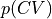 to construct the corresponding free energy profile
at the given temperature using the following formula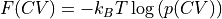
- Parameters:
histogram (
Histogram1D) – histogram from which the free energy profile is computedtemp (float) – the temperature at which the histogram input data was simulated, in atomic units.
cv_output_unit (str, default=None) – the units for printing and plotting of CV values (not the unit of the input array, that is assumed to be in atomic units). Units are defined using the molmod units module. If None is given, the cv_output_unit attribute of the histogram instance is used.
f_output_unit (str, default='kjmol') –
the units for printing and plotting of free energy values (not the unit of the input array, that is assumed to be in atomic units). Units are defined using the molmod units module.
cv_label (str, optional, default=None) – label for the CV for printing and plotting. If None is given, the cv_label attribute of the histogram instance is used.
f_label (str, optional, default='F') – label for the free energy for printing and plotting
propagator (instance of
Propagator, optional, default=Propagator()) – a Propagator used for error propagation. Can be usefull if one wants to adjust the error propagation settings (such as the number of random samples taken)
- classmethod from_txt(fn, temp, cvcol=0, fcol=1, fstdcol=None, cv_input_unit='au', f_input_unit='kjmol', cv_output_unit='au', f_output_unit='kjmol', cv_label='CV', f_label='F', cvrange=None, delimiter=None, reverse=False, cut_constant=False)[source]
See documentation off parent class routine
BaseProfile.from_txtfor meaning of arguments not documented below.- Parameters:
temp (float) – temperature corresponding to the free (energy) profile (in atomic units, hence, in kelvin).
- process_states(*args, **kwargs)[source]
This routine is not implemented in the current class, but only in its child classes (see e.g.
SimpleFreeEnergyProfile.process_states)
- recollect(qs_new, interpolate=False, plot=False, return_new_fes=False, verbose=False)[source]
Redefine the CV array to the new given array. For each interval of new CV values, collect all old free energy values for which the corresponding CV value falls in this new interval and average out. As such, this routine can be used to filter out noise on a given free energy profile by means of averaging.
- Parameters:
qs_new (np.ndarray) – Array of new CV values
interpolate (bool, optional, default=False) – if set to True, the free energy of bins on the new grid in which not a single old grid point ends up will be interpolated from the neighboring bins
plot (bool, optional, default=False) – If True, make a plot illustrating the recollection. It will show (1) the original FEP on the original CV grid, i.e. (CV[i],F[i]) in black crosses, as well as (2) the (possibly interpolated) recollection of this FEP on a newly defined Q-grid, i.e. use the specified Q-grid or define one automatically and average/interpolate the free energy in the new bins based on the (CV[i],F[i]) data, in a blue line and finally (3) the new Q-grid points for which no free energy was found (because no transformed data ended up in it and it could not be interpolated from neighbors) will be indicated as gray dashed verticle lines.
return_new_fes (bool, optional, default=False) – If set to False, the recollected data will be written to the current instance (overwritting the original data). If set to True, a new instance will be initialized with the recollected data and returned.
- Returns:
Returns an instance of the current class if the keyword argument return_new_fes is set to True. Otherwise, None is returned.
- Return type:
None or instance of same class as self
- transform_function(function, derivative=None, qs_new=None, interpolate=True, cv_label='f(CV)', cv_output_unit='au', plot=False, propagator=None, verbose=True)[source]
Routine to transform the current free energy profile in terms of the original
towards a free energy profile in terms of a new collective variable  according to the formula:
according to the formula:![F_2(Q) &= F_1(f^{-1}(Q)) + k_B T \log\left[\frac{df}{dCV}(f^{-1}(Q))\right]](_images/math/ed446fcfe9cb54a02abd68ebce80d3f65c0d49a3.png)
- Parameters:
function (callable) – The transformation function relating the old CV to the new Q, i.e.
derivative (callable, optional, default=None) – The analytical derivative of the transformation function
 . If set to None, the derivative will be estimated through numerical differentiation.
. If set to None, the derivative will be estimated through numerical differentiation.qs_new (np.ndarray, optional, default=None) – grid points for the new Q grid. If None, a uniform grid will be constructed between f(CV[0]) and f(CV[-1]) with equal number of points as the original CV grid.
interpolate (bool, optional, default=True) – if set to True, the free energy of bins on the new grid in which not a single old grid point ends up will be interpolated from the neighboring bins
cv_label (str, optional, default='f(CV)') – The label of the new collective variable used in plotting etc
cv_output_unit (str, optional, default='au') –
The unit of the new collective varaible used in plotting and printing. Units are defined using the molmod units module.
plot (bool, optional, default=False) – If True, make a plot illustrating the transformation. It will show (1) the transformation of the original FEP on the transformed CV grid, i.e. (Q[i],F_Q[i]) with
![Q[i]=f(CV[i])](_images/math/4b54cc5f56cd03282b5a2a2fb0709f04b8d4a39a.png) and 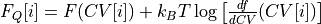 in black crosses, as well as (2) the (possibly interpolated) recollection of this new FEP on a newly defined Q-grid, i.e. use the specified Q-grid or define one automatically and average/interpolate the free energy in the new bins based on the (Q[i],F_Q[i]) data, in a blue line and finally (3) the new Q-grid points for which no free energy was found (because no transformed data ended up in it and it could not be interpolated from neighbors) will be indicated as gray dashed verticle lines.
and 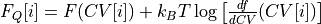 in black crosses, as well as (2) the (possibly interpolated) recollection of this new FEP on a newly defined Q-grid, i.e. use the specified Q-grid or define one automatically and average/interpolate the free energy in the new bins based on the (Q[i],F_Q[i]) data, in a blue line and finally (3) the new Q-grid points for which no free energy was found (because no transformed data ended up in it and it could not be interpolated from neighbors) will be indicated as gray dashed verticle lines.propagator (instance of
Propagator, optional, default=Propagator(target_distribution=self.error.__class__)) – a Propagator used for error propagation. Can be usefull if one wants to adjust the error propagation settings (such as the number of random samples taken)
- Returns:
transformed free energy profile
- Return type:
the same class as the instance this routine is called upon
- Raises:
ValueError – if self.error is a distribution that is neither an instance of
GaussianDistributionnor ofMultiGaussianDistribution
- class thermolib.thermodynamics.fep.BaseProfile(cvs, fs, error=None, cv_output_unit='au', f_output_unit='au', cv_label='CV', f_label='X')[source]
Base parent class to define a 1D profile of a property X as function of a certain collective variable (CV). This class will be used as the basis for (free) energy profiles.
- Parameters:
cvs (np.ndarray) –
the collective variable values, which should be in atomic units! If you need help properly converting to atomic units, we refer to the molmod units module.
fs (np.ndarray) –
the values of the property X, which should be in atomic units! If you need help properly converting to atomic units, we refer to the molmod units module.
error (child class of
Distributionclass, optional) – error distribution on the profile, defaults to Nonecv_output_unit (str, default='au') –
the units for printing and plotting of CV values (not the unit of the input array, that is assumed to be in atomic units). Units are defined using the molmod units module.
f_output_unit (str, default='kjmol') –
the units for printing and plotting of free energy values (not the unit of the input array, that is assumed to be in atomic units). Units are defined using the molmod units module.
cv_label (str, optional, default='CV') – label for the CV for printing and plotting
f_label (str, optional, default='X') – label for the observable X for printing and plotting
- crop(cvrange)[source]
Crop the profile to the given cvrange and throw away cropped data. This routine will alter the data in the current profile.
- Parameters:
cvrange (tuple) – the range of the collective variable defining the new range to which the FEP will be cropped.
- flower(nsigma=2)[source]
Return the lower limit of an n-sigma error bar on the profile property, i.e. 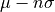 with
 the mean and
the mean and  the standard deviation.
the standard deviation.- Parameters:
nsigma (int, optional, default=2) – defines the n-sigma error bar
- Returns:
the lower limit of the n-sigma error bar
- Return type:
np.ndarray with dimensions determined by self.error
- Raises:
AssertionError – if self.error is not defined.
- classmethod from_average(profiles, cv_output_unit=None, cv_label=None, f_output_unit=None, f_label=None, error_estimate=None)[source]
Construct a profile as the average of a set of given profiles.
- Parameters:
profiles (list of instances of
BaseProfile(or one of its child classes such asBaseFreeEnergyProfileorSimpleFreeEnergyProfile)) – set of profiles to be averagedcv_output_unit (str or float, optional, default=None) –
the units for printing and plotting of CV values. If None, use the value of the
cv_output_unitattribute of the first profile. Units are defined using the molmod units module.cv_label (str, optional, default=None) – label for the collective variable in plots. If None, use the value of the
cv_labelattribute of the first profile.f_output_unit (str or float, optional, default=None.) –
the units for printing and plotting of X values (not the unit of the input array, that is defined by x_input_unit). If None, use the value of the
f_output_unitattribute of the first profile. Units are defined using the molmod units module.f_label (str, optional, default=None) – label for the X observable in plots. If None, use the value of the
f_labelattribute of the first profile.error_estimate (str, optional, default=None) – method of estimating the error. Currently, only std is supported, which computes the error from the standard deviation within the set of profiles.
- classmethod from_txt(fn, cvcol=0, fcol=1, fstdcol=None, cv_input_unit='au', f_input_unit='kjmol', cv_output_unit='au', f_output_unit='kjmol', cv_label='CV', f_label='X', cvrange=None, delimiter=None, reverse=False, cut_constant=False)[source]
Read the a property profile (and optionally its error bar) as function of a collective variable from a txt file.
- Parameters:
fn (str) – the name of the txt file (assumed to be readable by numpy.loadtxt) containing the data
cvcol (int, default=0) – index of the column in which the collective variable is stored
fcol (int, default=1) – index of the column in which the observable X is stored.
fstdcol (int, default=None) – index of the column in which the standard deviation of observable X is stored, which is used to construct an error distribution. If None, no standard deviation will be read and no error bar will be computed.
cv_input_unit (str or float, default='au') –
the units in which the CV values are stored in the file. Units are defined using the molmod units module.
f_input_unit (str or float, default='kjmol') –
the units in which the observable X values are stored in the file. Units are defined using the molmod units module.
cv_output_unit (str or float, default='au') –
the units for printing and plotting of CV values (not the unit of the input array, that is defined by cv_input_unit). Units are defined using the molmod units module.
f_output_unit (str or float, default='kjmol') –
the units for printing and plotting of observable X values (not the unit of the input array, that is defined by x_input_unit). Units are defined using the molmod units module.
cv_label (str, optional, default='CV') – label for the CV for printing and plotting
f_label (str, optional, default='X') – label for the property X for printing and plotting
cvrange (tuple or list, default=None) – only read the property X for CVs in the given range. If None, all data is read
delimiter (str, optional, default=None) – The delimiter used in the txt input file to separate columns. If None, use the default of the numpy.loadtxt routine (i.e. whitespace).
reverse (bool, optional, default=False) – if set to True, reverse the CV and X values (usefull to make sure reactant is on the left)
cut_constant (bool, optional, default=False) – if set to True, the data points at the start and end of the data array that are constant will be cut. Usefull to cut out unsampled areas for large and small CV values.
- fupper(nsigma=2)[source]
Return the upper limit of an n-sigma error bar on the profile property, i.e. 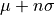 with
the mean and the standard deviation.- Parameters:
nsigma (int, optional, default=2) – defines the n-sigma error bar
- Returns:
the upper limit of the n-sigma error bar
- Return type:
np.ndarray with dimensions determined by self.error
- Raises:
AssertionError – if self.error is not defined.
- plot(fn: str | None = None, obss: list = ['value'], linestyles: list | None = None, linewidths: list | None = None, colors: list | None = None, cvlims: list | None = None, flims: list | None = None, show_legend: bool = False, **plot_kwargs)[source]
Plot the property stored in the current profile as function of the CV. If the error distribution is stored in self.error, various statistical quantities besides the estimated mean property (such as the error width, lower/upper limit on the error bar, random sample) can be plotted using the
obsskeyword. You can specify additional matplotlib keyword arguments that will be parsed to the matplotlib plotter (plot and/or fill_between) at the end of the argument list of this routine.- Parameters:
fn (str, optional, default=None) – name of a file to save plot to. If None, the plot will not be saved to a file.
obss (list, optional, default=['value']) –
Specify which statistical property/properties to plot. Multiple values are allowed, which will be plotted on the same figure. Following options are supported:
value - the values stored in self.fs
mean - the mean according to the error distribution, i.e. self.error.mean()
lower - the lower limit of the 2-sigma error bar (which corresponds to a 95% confidence interval in case of a normal distribution), i.e. self.error.nsigma_conf_int(2)[0]
upper - the upper limit of the 2-sigma error bar (which corresponds to a 95% confidence interval in case of a normal distribution), i.e. self.error.nsigma_conf_int(2)[1]
error - half the width of the 2-sigma error bar (which corresponds to a 95% confidence interval in case of a normal distribution), i.e. abs(upper-lower)/2
sample - a random sample taken from the error distribution, i.e. self.error.sample()
linestyles (list or None, optional, default=None) – Specify the line style (using matplotlib definitions) for each quantity requested in
obss. If None, all linestyles are set to ‘-’linewidths (list of strings or None, optional, default=None) – Specify the line width (using matplotlib definitions) for each quantity requested in
obss. If None, al linewidths are set to 1colors (list of strings or None, optional, default=None) – Specify the color (using matplotlib definitions) for each quantity requested in
obss. If None, matplotlib will choose.cvlims (list of strings or None, optional, default=None) – limits to the plotting range of the cv. If None, no limits are enforced
flims (list of strings or None, optional, default=None) – limits to the plotting range of the X property. If None, no limits are enforced
show_legend (bool, optional, default=None) – If True, the legend is shown in the plot
- Raises:
ValueError – if the
obsargument contains an invalid specification
- plot_corr_matrix(fn: str | None = None, flims: list | None = None, cmap: str = 'bwr', **plot_kwargs)[source]
Make a 2D filled contour plot of the correlation matrix (i.e. the normalized covariance matrix) containing the correlation between every pair of points on the X profile. This correlation ranges from +1 (red when cmap=’bwr’) over 0 (white when cmap=’bwr’) to -1 (blue when cmap=’bwr’). For easy interpretation, the plot of the X profile itself is included above the correlation plot (top pane).
- Parameters:
fn (str or None, optional, default=None) – name of file to save the plot to. If None, the plot is not saved
flims (list or None, optional, default=None) – Limit the plotting range of the X property in the original profile plot included in the top pane.
cmap (str, optional, default='bwr') – Specification of the matplotlib color map for the 2D plot of the correlation matrix
- Raises:
ValueError – when self.error is not specified (as this is needed to compute the correlation matrix)
- savetxt(fn_txt)[source]
Save the current profile as txt file. The values of CV and X are written in units specified by the cv_output_unit and f_output_unit attributes of the self instance. If the error attribute of self is not None, the corresponding std values will be written to the file as well in the third column.
- Parameters:
fn_txt (str) – name for the output file
- set_ref(ref='min')[source]
Set the zero energy reference of the profile.
- Parameters:
ref (str or int, optional, default='min') – the choice for the zero reference of X. Currently only ‘min’, ‘max’ or an integer is implemented, resulting in setting the value of the minimum, maximum or X[i] to zero respectively.
- Raises:
IOError – invalid value for keyword argument ref is given. See doc above for choices.
- class thermolib.thermodynamics.fep.FreeEnergySurface2D(cv1s, cv2s, fs, temp, error=None, cv1_output_unit='au', cv2_output_unit='au', f_output_unit='kjmol', cv1_label='CV1', cv2_label='CV2', f_label='F')[source]
Class implementing a 2D free energy surface F(CV1,CV2) (stored in self.fs) as function of two collective variables (CV) denoted by CV1 (stored in self.cv1s) and CV2 (stored in self.cv2s).
- Parameters:
cv1s (np.ndarray) –
array containing the values for the first collective variable CV1. Should be given in atomic units. If you need help properly converting to atomic units, we refer to the molmod units module.
cv2s –
array the values for the second collective variable CV2. Should be given in atomic units. If you need help properly converting to atomic units, we refer to the molmod units module.
fs (np.ndarray) –
2D array containing the free energy values corresponding to the given values of CV1 and CV2 in xy indexing. Should be given in atomic units. If you need help properly converting to atomic units, we refer to the molmod units module.
temp (float) –
temperature at which the free energy is given. Should be given in atomic units. Units are defined using the molmod units module.
error (child of
Distribution, optional, default=None) – error distribution on the free energy profile, defaults to Nonecv1_output_unit (str, optional, defaults to 'au') –
unit in which the CV1 values will be printed/plotted, not the unit in which the input array is given (which is assumed to be atomic units). Units are defined using the molmod units module.
cv2_output_unit (str, optional, defaults to 'au') –
unit in which the CV2 values will be printed/plotted, not the unit in which the input array is given (which is assumed to be atomic units). Units are defined using the molmod units module.
f_output_unit (str, optional, default='kjmol') –
unit in which the free energy values will be printe/plotted, not the unit in which the input array f is given (which is assumed to be kjmol). Units are defined using the molmod units module.
cv1_label (str, optional, default='CV1') – label of CV1 for printing and plotting
cv2_label (str, optional, default='CV2') – label of CV2 for printing and plotting
f_label (str, optional, default='F') – label for the free energy for printing and plotting
- crop(cv1range=[-inf, inf], cv2range=[-inf, inf], return_new_fes=False)[source]
Crop the free energy surface by removing all data for which either cv1 or cv2 is beyond a given range.
- Parameters:
cv1range (list, optional, default=[-np.inf,np.inf]) – range of cv1 (along x-axis) that will remain after cropping
cv2range (list, optional, default=[-np.inf,np.inf]) – range of cv2 (along y-axis) that will remain after cropping
return_new_fes (bool, optional, default=False) – if set to false, the cropping process will be applied on the existing instance, otherwise a copy will be returned
- Returns:
new cropped FES if
return_new_fes=True- Return type:
None or
FreeEnerySurface2D
- detect_clusters(eps=1.5, min_samples=8, metric='euclidean', fn_plot=None, delete_clusters=[-1])[source]
Routine to apply the DBSCAN clustering algoritm as implemented in the Scikit Learn package to the (CV1,CV2) grid points that correspond to finite free energies (i.e. not nan or inf) to detect clusters of neighboring points.
The DBSCAN algorithm first identifies the core samples, defined as samples for which at least
min_samplesother samples are within a distance ofeps. Next, the data is divided into clusters based on these core samples. A cluster is defined as a set of core samples that can be built by recursively taking a core sample, finding all of its neighbors that are core samples, finding all of their neighbors that are core samples, and so on. A cluster also has a set of non-core samples, which are samples that are neighbors of a core sample in the cluster but are not themselves core samples. Intuitively, these samples are on the fringes of a cluster. Each cluster is given an integer as label.Any sample that is not a core sample, and is at least
epsin distance from any core sample, is considered an outlier by the algorithm and is what we here consider an isolated point/region. These points get the cluster label of -1.Finally, all data points belonging to a cluster with label specified in
delete_clusterswill have theire free energy set to nan. A safe choice here is to just delete isolated regions, i.e. the point in cluster with label -1 (which is the default).- Parameters:
eps (float, optional, default=1.5) – DBSCAN parameter representing maximum distance between two samples for them to be considered neighbors (for more, see DBSCAN documentation)
min_samples (int, optional, default=8) –
DBSCAN parameter representing the number of samples in a neighborhood for a point to be considered a core point (for more, see DBSCAN documentation)
metric (str or callable, optional, default='euclidean') –
DBSCAN parameter representing the metric used when calculating distance (for more, see DBSCAN documentation)
fn_plot (str, optional, default=None) – if specified, a plot will be made (and written to
fn_plot) visualizing the resulting clustersdelete_clusters (list, optional, default=[-1]) – list of cluster names whos members will be deleted from the free energy surface data. If set to to [-1], only isolated points (not belonging to a cluster) will be deleted.
- flower(nsigma=2)[source]
Return the lower limit of an n-sigma error bar, i.e. with
the mean and the standard deviation.- Parameters:
nsigma (int, optional, default=2) – defines the n-sigma error bar
- Returns:
the lower limit of the n-sigma error bar
- Return type:
np.ndarray with dimensions determined by self.error
- Raises:
AssertionError – if self.error is not defined.
- classmethod from_histogram(histogram, temp, cv1_output_unit=None, cv2_output_unit=None, cv1_label=None, cv2_label=None, f_output_unit='kjmol', f_label='F', propagator=<thermolib.error.Propagator object>)[source]
Use the 2D probability histogram 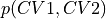 to construct the corresponding 2D free energy surface at the given temperature using the following formula
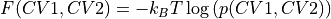
- Parameters:
histogram (
Histogram2D) – histogram from which the free energy profile is computedtemp (float) – the temperature at which the histogram input data was simulated
cv1_output_unit (str, default=None) –
the units for printing and plotting of CV1 values (not the unit of the input array, that is assumed to be in atomic units). Units are defined using the molmod units module. If None is given, the cv1_output_unit attribute of the histogram instance is used.
cv2_output_unit (str, default=None) –
the units for printing and plotting of CV2 values (not the unit of the input array, that is assumed to be in atomic units). Units are defined using the molmod units module. If None is given, the cv2_output_unit attribute of the histogram instance is used.
f_output_unit (str, default='kjmol') –
the units for printing and plotting of free energy values (not the unit of the input array, that is assumed to be in atomic units). Units are defined using the molmod units module.
cv1_label (str, optional, default=None) – label for the CV1 for printing and plotting. If None is given, the cv1_label attribute of the histogram instance is used.
cv2_label (str, optional, default=None) – label for the CV2 for printing and plotting. If None is given, the cv2_label attribute of the histogram instance is used.
f_label (str, optional, default='F') – label for the free energy for printing and plotting
propagator (instance of
Propagator, optional, default=Propagator()) – a Propagator used for error propagation. Can be usefull if one wants to adjust the error propagation settings (such as the number of random samples taken)
- Raises:
RuntimeError – if the histogram.error could not be properly interpretated.
- classmethod from_txt(fn, temp, cv1_col=0, cv2_col=1, f_col=2, cv1_input_unit='au', cv1_output_unit='au', cv2_input_unit='au', cv2_output_unit='au', f_output_unit='kjmol', f_input_unit='kjmol', cv1_label='CV1', cv2_label='CV2', f_label='F', delimiter=None, verbose=False)[source]
Read the free energy surface on a 2D grid as function of two collective variables from a txt file.
- Parameters:
fn (str) – the name of the txt file (assumed to be readable by numpy.loadtxt) containing the data.
temp (float) – the temperature at which the free energy is given
cv1_col (int, optional, default=0) – the column in which the first collective variable is stored
cv2_col (int, optional, default=1) – the column in which the second collective variable is stored
f_col (int, optional, default=2) – the column in which the free energy is stored
cv1_input_unit – the unit in which the first CV values are stored in the input file
cv1_output_unit (str, optional, default='au') –
unit in which the CV1 values will be printed/plotted, not the unit in which the input array is given (which is given by cv1_input_unit). Units are defined using the molmod units module.
cv2_input_unit (str, optional, default='au') – the unit in which the second CV values are stored in the input file
cv2_output_unit (str, optional, default='kjmol') –
unit in which the CV2 values will be printed/plotted, not the unit in which the input array is given (which is given by cv2_input_unit). Units are defined using the molmod units module.
f_input_unit (str, optional, default='kjmol') – the unit in which the free energy values are stored in the input file
f_output_unit –
unit in which the free energy values will be printed/plotted, not the unit in which the input array is given (which is given by f_input_unit). Units are defined using the molmod units module.
cv1_label (str, optional, default='CV1') – the label for the CV1 axis in plots
cv2_label (str, optional, default='CV2') – the label for the CV2 axis in plots, defaults to ‘CV2’
f_label (str, optional, default='F') – label for the free energy for printing and plotting
delimiter (str, optional, default=None) – the delimiter used in the numpy input file, this argument is parsed to the numpy.loadtxt routine.
verbose (bool, optional, default=False) – If True, increase logging verbosity
- Returns:
2D free energy surface
- Return type:
- fupper(nsigma=2)[source]
Return the upper limit of an n-sigma error bar, i.e. with
the mean and the standard deviation.- Parameters:
nsigma (int, optional, default=2) – defines the n-sigma error bar
- Returns:
the upper limit of the n-sigma error bar
- Return type:
np.ndarray with dimensions determined by self.error
- Raises:
AssertionError – if self.error is not defined.
- interpolate(interpolation_depth=3, return_new_fes=False, propagator=None)[source]
If the current FES has bins for which the free energy is np.nan, look if that bin has neighbors (up to X-nearest neighbors with X=interpolation_depth) in all four directions (left/right, up/down) that have a defined free energy (i.e. not np.nan) and interpolate between those 4 values. Only do this if all 4 neighbors have defined free energy to avoid extending the edges. The main part of this routine is implemented in
interpolate_surface_2d, while the current routine serves mainly as a wrapper to do propper error propagation.- Parameters:
interpolation_depth (int, optional, default=3) – interpolation_depth parameter parsed to the
inerpolate_surface_2droutine. See documentation in that routine for more details.return_new_fes (bool, optional, default=False) – If set to False, the interpolated data will be written to the current instance of FreeEnergySurface2D. If set to True, a new instance of FreeEnergySurface2D will be returned.
propagator (instance of
Propagator, optional, default=Propagator(target_distribution=self.error.__class__, samples_are_flattened=True)) – a Propagator used for error propagation. Can be usefull if one wants to adjust the error propagation settings (such as the number of random samples taken)
- plot(fn=None, slicer=[slice(None, None, None), slice(None, None, None)], obss=['value'], linestyles=None, linewidths=None, colors=None, cv1_lims=None, cv2_lims=None, flims=None, ncolors=8, plot_additional_function_contours=None, **plot_kwargs)[source]
Make either a 2D contour plot of F(CV1,CV2) or a 1D sliced plot of F along a slice in the direction specified by the slicer argument. Appart from the value of the free energy itself, other (statistical) related properties can be plotted as defined in the obbs argument. At the end of the argument list, you can also specify any matplotlib keyword arguments you wish to parse to the matplotlib plotter. E.g. if you want to specify the colormap, you can just add at the end of the arguments
cmap='rainbow'.- Parameters:
fn (str, optional, default=None) – name of a file to save plot to. If None, the plot will not be saved to a file.
slicer (list of slices or integers, optional, default=[slice(None),slice(None)]) –
determines which degrees of freedom (CV1/CV2) vary/stay fixed in the plot. If slice(none) is specified, the free energy will be plotted as function of the corresponding CV. If an integer i is specified, that corresponding CV will be kept fixed at its i-th value. Some examples:
[slice(None),slice(Nonne)] – a 2D contour plot will be made of F as function of both CVs
[slice(None),10] – a 1D plot will be made of F as function of CV1 with CV2 fixed at self.cv2s[10]
[23,slice(None)] – a 1D plot will be made of F as function of CV2 with CV1 fixed at self.cv1s[23]
obss (list, optional, default=['value']) –
Specify which statistical property/properties to plot. Multiple values are allowed, which will be plotted on the same figure. Following options are supported:
value - the values stored in self.fs
mean - the mean according to the error distribution, i.e. self.error.mean()
lower - the lower limit of the 2-sigma error bar (which corresponds to a 95% confidence interval in case of a normal distribution), i.e. self.error.nsigma_conf_int(2)[0]
upper - the upper limit of the 2-sigma error bar (which corresponds to a 95% confidence interval in case of a normal distribution), i.e. self.error.nsigma_conf_int(2)[1]
error - half the width of the 2-sigma error bar (which corresponds to a 95% confidence interval in case of a normal distribution), i.e. abs(upper-lower)/2
sample - a random sample taken from the error distribution, i.e. self.error.sample()
linestyles (list or None, optional, default=None) – Specify the line style (using matplotlib definitions) for each quantity requested in
obss. If None, matplotlib will choose.linewidths (list of strings or None, optional, default=None) – Specify the line width (using matplotlib definitions) for each quantity requested in
obss. If None, matplotlib will choose.colors (list of strings or None, optional, default=None) – Specify the color (using matplotlib definitions) for each quantity requested in
obss. If None, matplotlib will choose.cv1_lims (list of strings or None, optional, default=None) – limits to the plotting range of CV1. If None, no limits are enforced
cv2_lims (list of strings or None, optional, default=None) – limits to the plotting range of CV2. If None, no limits are enforced
flims (list of strings or None, optional, default=None) – limits to the plotting range of the free energy. If None, no limits are enforced
ncolors (int, optional, default=8) – only relevant for 2D contour plot, represents the number of contours (and hence colors) to be used in plot.
plot_additional_function_contours ([callable, list(float)], optional, default=None) – allows to specify function f(CV1,CV2) and a list of contour values [c_1, c_2, …]. This will add contours of the form 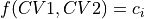 to the plot.
- project_average(delta=None, cv_output_unit='au', return_class=<class 'thermolib.thermodynamics.fep.BaseFreeEnergyProfile'>, propagator=None)[source]
Construct a 1D free energy profile representing the projection of the 2D free energy surface F2(CV1,CV2) onto the average q=(CV1+CV2)/2 of the collective variables using the following formula:
with 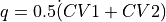. This routine is a wrapper around the more general
project_function.- Parameters:
delta (float, optional, default=None) – width of the single-bin approximation of the delta function applied in the projection formula. The delta function is one whenever abs(function(cv1,cv2)-q)<delta/2. Hence, delta has the same units as the new collective variable q. If None, the average bin width of the new CV is used.
cv_output_unit (str, optional, default='au') – unit for the new CV for plotting and printing purposes
return_class (python class object, optional, default=BaseFreeEnergyProfile) – The class of which an instance will finally be returned.
propagator (instance of
Propagator, optional, default=None) – a Propagator used for error propagation. Can be usefull if one wants to adjust the error propagation settings (such as the number of random samples taken). If set to None, the default of theproject_functionis used.
- Returns:
projected 1D free energy profile
- Return type:
see return_class argument
- project_cv1(delta=None, cv_output_unit='au', return_class=<class 'thermolib.thermodynamics.fep.BaseFreeEnergyProfile'>, propagator=None)[source]
Construct a 1D free energy profile representing the projection of the 2D free energy surface F2(CV1,CV2) onto q=CV1 using the formula:
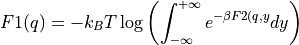
with 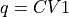. This routine is a wrapper around the more general
project_function- Parameters:
delta (float, optional, default=None) – width of the single-bin approximation of the delta function applied in the projection formula. The delta function is one whenever abs(function(cv1,cv2)-q)<delta/2. Hence, delta has the same units as the new collective variable q. If None, the average bin width of the new CV is used.
cv_output_unit (str, optional, default='au') – unit for the new CV for printing and plotting purposes
return_class (python class object, optional, default=BaseFreeEnergyProfile) – The class of which an instance will finally be returned.
propagator (instance of
Propagator, optional, default=None) – a Propagator used for error propagation. Can be usefull if one wants to adjust the error propagation settings (such as the number of random samples taken). If set to None, the default of theproject_functionis used.
- Returns:
projected 1D free energy profile
- Return type:
see return_class argument
- project_cv2(delta=None, cv_output_unit='au', return_class=<class 'thermolib.thermodynamics.fep.BaseFreeEnergyProfile'>, propagator=None)[source]
Construct a 1D free energy profile representing the projection of the 2D FES F2(CV1,CV2) onto q=CV2. This is implemented as follows:
F1(q) = -k_B T logleft( int_{-infty}^{+infty} e^{-beta F2(x,q}dx right)
with 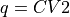. This routine is a wrapper around the more general
project_function- Parameters:
delta (float, optional, default=None) – width of the single-bin approximation of the delta function applied in the projection formula. The delta function is one whenever abs(function(cv1,cv2)-q)<delta/2. Hence, delta has the same units as the new collective variable q. If None, the average bin width of the new CV is used.
cv_output_unit (str, optional, default='au') – unit for the new CV for printing and plotting purposes
return_class (python class object, optional, default=BaseFreeEnergyProfile) – The class of which an instance will finally be returned.
propagator (instance of
Propagator, optional, default=None) – a Propagator used for error propagation. Can be usefull if one wants to adjust the error propagation settings (such as the number of random samples taken). If set to None, the default of theproject_functionis used.
- Returns:
projected 1D free energy profile
- Return type:
see return_class argument
- project_difference(sign=1, delta=None, cv_output_unit='au', return_class=<class 'thermolib.thermodynamics.fep.BaseFreeEnergyProfile'>, propagator=None)[source]
Construct a 1D free energy profile representing the projection of the 2D FES onto the difference of collective variables using the following formula:
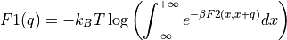
with 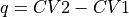. This routine is a wrapper around the more general
project_function.- Parameters:
sign (int, optional, default=1) – If sign is set to 1, the projection is done on q=CV2-CV1, if it is set to -1, projection is done to q=CV1-CV2 instead
delta (float, optional, default=None) – width of the single-bin approximation of the delta function applied in the projection formula. The delta function is one whenever abs(function(cv1,cv2)-q)<delta/2. Hence, delta has the same units as the new collective variable q. If None, the average bin width of the new CV is used.
cv_output_unit (str, optional, default='au') – unit for the new CV for printing and plotting purposes
return_class (python class object, optional, default=BaseFreeEnergyProfile) – The class of which an instance will finally be returned.
propagator (instance of
Propagator, optional, default=None) – a Propagator used for error propagation. Can be usefull if one wants to adjust the error propagation settings (such as the number of random samples taken). If set to None, the default of theproject_functionis used.
- Returns:
projected 1D free energy profile
- Return type:
see return_class argument
- Raises:
ValueError – if an invalid value for sign is given.
- project_function(function, qs, delta=None, cv_label='CV', cv_output_unit='au', return_class=<class 'thermolib.thermodynamics.fep.BaseFreeEnergyProfile'>, propagator=None)[source]
Routine to implement the general projection of a 2D FES onto a collective variable defined by the given function (which takes the original two CVs as arguments).
- Parameters:
function (callable) – function in terms of the original CVs to define the new CV to project upon
qs (np.ndarray) – grid for the new CV
delta (float, optional, default=None) – width of the single-bin approximation of the delta function applied in the projection formula. The delta function is one whenever abs(function(cv1,cv2)-q)<delta/2. Hence, delta has the same units as the new collective variable q. If None, the average bin width of the new CV is used.
cv_label (str, optional, default='CV') – label for the new CV
cv_output_unit (str, optional, default='au') – unit for the new CV for printing and plotting purposes
return_class (python class object, optional, default=BaseFreeEnergyProfile) – The class of which an instance will finally be returned
propagator (instance of
Propagator, optional, default=None) – a Propagator used for error propagation. Can be usefull if one wants to adjust the error propagation settings (such as the number of random samples taken). If set to None, propagator is initialized as Propagator(target_distribution=self.error.__class__, samples_are_flattened=True) where self.error.__class__ indicates the distribution of the error on the 2D FES itself, and ncycles is set to ncycles_default defined in theerrormodule.
- Returns:
projected 1D free energy profile
- Return type:
see return_class argument
- recollect(q1s_new, q2s_new, interpolate=False, interpolation_depth=3, return_new_fes=False)[source]
Redefine the CV1 and CV2 grids to the given new arrays. For each new (CV1,CV2)-bin, collect all free energy values on the original grid that fall within this new bin and make the boltzmann average (disregarding possible nans as part of the average). As such, this routine can be used to (1) coarsen a grid that was originally to fine and/or (2) filter out noise on a given free energy profile by means of averaging. The main part is implemented in the routine
recollect_surface_2d, while the current routine serves as a wrapper for proper error propagation.- Parameters:
q1s_new (np.ndarray) – Array containing grid points for new CV1 grid
q2s_new (np.ndarray) – Array containing grid points for new CV2 grid
interpolate (bool, optional, default=False) – if set to True, apply the
inerpolate_surface_2droutine for interpolating fs values that are np.nan using its neighboring values.interpolation_depth (int, optional, default=3) – interpolation_depth parameter parsed to the
inerpolate_surface_2droutine. See documentation in that routine for more details.return_new_fes (bool, optional, default=False) – If set to False, the recollected data will be written to the current instance (overwritting the original data). If set to True, a new instance will be initialized with the recollected data and returned.
- Returns:
Returns an instance of the current class if the keyword argument return_new_fes is set to True. Otherwise, None is returned.
- Return type:
None or instance of same class as self
- savetxt(fn_txt)[source]
Save the free energy profile to a txt file using numpy.savetxt. The units in which the CVs and free energy are written is specified in the attributes cv1_output_unit, cv2_output_unit and f_output_unit.
- Parameters:
fn_txt (str) – name of the file to write fes to
- set_ref(ref='min')[source]
Set the energy reference of the free energy surface.
- Parameters:
ref (str, default='min') – the choice for the energy reference. Currently only one possibility is implemented, i.e. m or min for the global minimum.
- Raises:
IOError – if invalid value for keyword argument ref is given. See doc above for choices.
- transform_function(functions, q1s, q2s, derivatives=None, interpolate=True, propagator=None, cv1_label='Q1', cv2_label='Q2', cv1_output_unit='au', cv2_output_unit='au')[source]
Routine to transform the current free energy profile in terms of the original collective variables 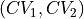 towards a free energy profile in terms of new collective variables
 according to the given deterministic relation
according to the given deterministic relation
with
 the inverse of
the inverse of  . The transformed free energy surface
. The transformed free energy surface  is given by:
is given by:![F_Q(Q_1,Q_1) &= F_{CV}(H_1(Q_1,Q_2),H_2(Q_1,Q_2)) + k_B T \log\left[J\left(H_1(Q_1,Q_2),H_2(Q_1,Q_2)\right)\right]](_images/math/759292a6cc8e2254b886ab9620800cd5433f2f27.png)
where
 represents the Jacobian determinant of the transformation:
represents the Jacobian determinant of the transformation:
Depending on the size of your grid, this routine might take several minutes in case an error bar was included in the original FES and hence needs to be propagated.
- Parameters:
functions (callable) – The transformation functions
 and
and  from the equations above.
from the equations above.q1s (np.ndarray) – array of grid points of the new collective variable

q2s (np.ndarray) – array of grid points of the new collective variable 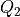
derivatives (callable, optional, default=None) – The analytical derivatives of the transformation functions
and . Should be given as a list 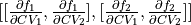. If set to None, the derivatives will be estimated through numerical differentiation.interpolate (bool, optional, default=True) – If set to True, perform a interpolation using the
interpolate_surface_2d(see documentation there for more info).propagator (instance of
Propagator, optional, default=None) – a Propagator used for error propagation. Can be usefull if one wants to adjust the error propagation settings (such as the number of random samples taken). If set to None, propagator is initialized as Propagator(target_distribution=self.error.__class__, flattener=Flattener(len(q1s),len(q2s)), samples_are_flattened=False) where self.error.__class__ indicates the distribution of the error on the 2D FES itself, and ncycles is set to ncycles_default defined in theerrormodule. Beware that even if a custom propagator is parsed, its attributes flattener and samples_are_flattened will be overwritten with Flattener(len(q1s),len(q2s)) and False respectively for proper functioning.cv1_label (str, optional, default='Q1') – The label of the new first collective variable used in plotting etc
cv2_label (str, optional, default='Q2') – The label of the new second collective variable used in plotting etc
cv1_output_unit (str, optional, default='au') –
The unit of the new first collective varaible used in plotting and printing. Units are defined using the molmod units module.
cv2_output_unit (str, optional, default='au') –
The unit of the new second collective varaible used in plotting and printing. Units are defined using the molmod units module.
- Returns:
transformed free energy profile
- Return type:
the same class as the instance this routine is called upon
- class thermolib.thermodynamics.fep.SimpleFreeEnergyProfile(cvs, fs, temp, error=None, cv_output_unit='au', f_output_unit='kjmol', cv_label='CV', f_label='F')[source]
Class implementing a ‘simple’ 1D FEP representing a bi-stable profile with 2 minima corresponding to the reactant and process states and 1 local maximum corresponding to the transition state. As such, this class offers all features of the parent class
BaseFreeEnergyProfileas well as the functionality implemented inprocess_statesto automatically define the macrostates corresponding to reactant state and product state as well as the microstate corresponding to the transition state.See documentation of
BaseFreeEnergyProfile.- classmethod from_base(base)[source]
Simple class method to transform a given instance of BaseFreeEnergyProfile into an instance of SimpleFreeEnergyProfile
- Parameters:
base (
BaseFreeEnergyProfile) – instance ofBaseFreeEnergyProfileto convert into an instance ofSimpleFreeEnergyProfile
- plot(fn: str | None = None, obss: list | str = 'thermo_kinetic', rate: object | None = None, linestyles: list | None = None, linewidths: list | None = None, colors: list | None = None, cvlims: list | None = None, flims: list | None = None, micro_marker: str = 's', micro_color: str = 'r', micro_size: int = 4, micro_linestyle: str = '--', macro_linestyle: str = '-', macro_color: str = 'b', do_latex: bool = False, show_legend: bool = False, fig_size: list | None = None)[source]
Plot the property stored in the current profile as function of the CV. If the error distribution is stored in self.error, various statistical quantities besides the mean (such as the error width, lower/upper limit on the error bar, random sample) can be plotted using the
obsskeyword. Alternatively, one can also plot the thermodynamic micro/macrostates (defined byprocess_states()) and optionally the kinetic properties such as the rate constant and phenomenological barrier (see obss and rate keywords in the documentation below).- Parameters:
fn (str, optional, default=None) – name of a file to save plot to. If None, the plot will not be saved to a file.
obss (list, optional, default='thermo_kinetic') –
Specify which statistical property/properties to plot. Multiple values from the list given below are allowed, which will be plotted on the same figure. Alternatively, one can also specify obss=thermo_kinetic which will plot the free energy profile, its error as well as highlight all micro and macrostates defined in the current instance.
value - the values stored in self.fs
mean - the mean according to the error distribution, i.e. self.error.mean()
lower - the lower limit of the 2-sigma error bar (which corresponds to a 95% confidence interval in case of a normal distribution), i.e. self.error.nsigma_conf_int(2)[0]
upper - the upper limit of the 2-sigma error bar (which corresponds to a 95% confidence interval in case of a normal distribution), i.e. self.error.nsigma_conf_int(2)[1]
error - half the width of the 2-sigma error bar (which corresponds to a 95% confidence interval in case of a normal distribution), i.e. abs(upper-lower)/2
sample - a random sample taken from the error distribution
rate (
RateFactorEquilibriumor None, optional, default=None) – only relevent whenobss=thermo_kinetic, rate factor that allows to include inclusion of reaction rate and phenomenological free energy barriers to plotmicro_marker (str, optional, default='s') – matplotlib marker style for indicating microstates
micro_color (str, optional, default='r') – matplotlib marker color for indicating microstates
micro_size (str, optional, default=4) – matplotlib marker size for indicating microstates
macro_linestyle (str, optional, default='-') – matplotlib line style for indicating macrostates
macro_color (str, optional, default='b') – matplotlib line color for indicating macrostates
linestyles (list or None, optional, default=None) – Specify the line style (using matplotlib definitions) for each quantity requested in
obss. If None, matplotlib will choose.linewidths (list of strings or None, optional, default=None) – Specify the line width (using matplotlib definitions) for each quantity requested in
obss. If None, matplotlib will choose.colors (list of strings or None, optional, default=None) – Specify the color (using matplotlib definitions) for each quantity requested in
obss. If None, matplotlib will choose.cvlims (list of strings or None, optional, default=None) – limits to the plotting range of the cv. If None, no limits are enforced
flims (list of strings or None, optional, default=None) – limits to the plotting range of the X property. If None, no limits are enforced
do_latex (bool, optional, default=False) – only relevent when
obss=thermo_kinetic, will format the numerical values on the side of the plot in LaTeX.show_legend (bool, optional, default=None) – If True, the legend is shown in the plot
fig_size (list of two floats, optional, default=None) – specify the matplotlib figure siz
- Raises:
ValueError – if the
obsargument contains an invalid specification
- process_states(lims=[-inf, None, None, inf], verbose=False, propagator=<thermolib.error.Propagator object>)[source]
Routine to define:
a microstate representig the transition state (ts) as the local maximum within the given ts_range
a microstate representing the reactant (r) as local minimum left of ts
a microstate representing the product (p) as local minimum right of ts
a macrostate representing the reactant (R) as an integrated sum of microstates left of the ts
a macrostate representing the product (P) as an integrated sum of microstates right of the ts
- Parameters:
lims (list[float], optional, default=[-np.inf,None, None, np.inf]) – list of 4 values [a,b,c,d] such that the reactant state minimum (r) should be within interval [a,b], the transition state maximum (ts) should be within interval [b,c] and the the product state minimum (p) should be within interval [c,d]. If b and c are both None, the transition state maximum is looked for in the entire range defined by [a,b] (which will fail if the transition state is only a local maximum but not the global maximum in that range). a can be specified as -np.inf and/or b can be specified as np.inf indicating no limits.
verbose (bool, optional, default=False) – If True, increase verbosity and print thermodynamic state properties
propagator (instance of
Propagator, optional, default=Propagator()) – a Propagator used for error propagation. Can be usefull if one wants to adjust the error propagation settings (such as the number of random samples taken)
- Raises:
AssertionError – if one of b,c is None, but not both
AssertionError – by a
Statechild classes if it could not determine its micro/macrostate
- set_ref(ref='min')[source]
Set the energy reference of the free energy profile.
- Parameters:
ref (str, optional, default=min) –
the choice for the energy reference, should be one of:
m or min for the global minimum
r or reactant for the reactant minimum
ts, trans_state or transition for the transition state maximum
p or product for the product minimum
The options r, ts and p are only available if the reactant, transition state and product have already been found by the routine process_states.
- Raises:
IOError – invalid value for keyword argument ref is given. See doc above for choices.
AssertionError – if a microstate is not defined while the ref choice requires it
AssertionError – if the ref choice was set to min or max, but the global minimum/maximum could not be found
- thermolib.thermodynamics.fep.plot_profiles(profiles, fn=None, labels=None, flims=None, colors=None, linestyles=None, linewidths=None, do_latex=False)[source]
Make a plot to compare multiple 1D free energy profiles
- Parameters:
profiles (list of
BaseProfileor child classes) – list of profiles to plotfn (str, optional, default=None) – file name to save the figure to. If None, the plot will not be saved.
labels (list(str), optional, default=None) – list of labels for the legend. Order is assumed to be consistent with profiles.
flims (list/np.ndarray, optional, default=None) – [lower,upper] limits of the free energy axis in plots.
colors –
List of matplotlib color definitions for each entry in profile. If an entry is None, a color will be chosen internally. If colors=None, implying all colors are chosen internally. :type colors: List(str), optional, default=None
- param linestyles:
List of matplotlib line style definitions for each entry in histograms. If an entry is None, the default line style of ‘-’ will be chosen . If linestyles=None, implying all line styles are set to the default of ‘-‘.
- type linestyles:
List(str), optional, default=None
- param linewidths:
List of matplotlib line width definitions for each entry in histograms. If an entry is None, the default line width of 1 will be chosen. If linewidths=None, implying all line widths are set to the default of 2.
- type linewidths:
List(str), optional, default=None
do_latex (bool, optional, default=False) – Use LaTeX to do formatting of text in plot, requires working LaTeX installation.
Histograms – thermolib.thermodynamics.histogram
- class thermolib.thermodynamics.histogram.Histogram1D(cvs, ps, error=None, cv_output_unit='au', cv_label='CV')[source]
Class representing a 1D probability histogram in terms of a single collective variable
.- Parameters:
cvs (np.ndarray) –
the bin values of the collective variable CV, which should be in atomic units! If you need help properly converting to atomic units, we refer to the molmod units module.
ps (np.ndarray) –
the histogram probability values at the given CV values. The probabilities should be in atomic units! If you need help properly converting to atomic units, we refer to the molmod units module.
error (child of
Distribution, optional, default=None) – error distribution on the free energy profilecv_output_unit (str, optional, default='au') –
the units for printing and plotting of CV values (not the unit of the input array, that is assumed to be in atomic units). Units are defined using the molmod units module.
cv_label (str, optional, default='CV') – label for the CV for printing and plotting
- classmethod from_average(histograms, error_estimate=None, cv_output_unit=None, cv_label=None)[source]
Start from a set of 1D histograms and compute and return the averaged histogram (and optionally the error bar).
- Parameters:
histograms (list of
Histogram1Dinstances) – set of histrograms to be averagederror_estimate (str, optional, default=None) – indicate how to perform error analysis. Currently, only one method is supported, ‘std’, which will compute the error bar from the standard deviation within the set of histograms.
cv_output_unit (str, optional) – the unit in which cv will be plotted/printed. Defaults to the cv_output_unit of the first histogram given.
cv_label (str, optional) – label for the new CV. Defaults to the cv_label of the first given histogram.
- Raises:
AssertionError – if the histograms do not have a consistent CV grid
AssertionError – if the histograms do not have a consistent CV label
- classmethod from_fep(fep, temp)[source]
Compute a probability histogram from the given free energy profile at the given temperature.
- Parameters:
fep (fep.BaseFreeEnergyProfile/fep.SimpleFreeEnergyProfile) – free energy profile from which the probability histogram is computed
temp (float) – the temperature at which the histogram input data was simulated
- classmethod from_single_trajectory(data, bins, error_estimate=None, error_p_threshold=0.0, cv_output_unit='au', cv_label='CV')[source]
Routine to estimate a 1D probability histogram in terms of a single collective variable from a series of samples of that collective variable.
- Parameters:
data (np.ndarray) –
series of samples of the collective variable. Should be in atomic units! If you need help properly converting to atomic units, we refer to the molmod units module.
bins (np.ndarray) – the edges of the bins for which a histogram will be constructed. This argument is parsed to the numpy.histogram routine. Hence, more information on its meaning and allowed values can be found there.
error_estimate (str or None, optional, default=None) –
indicate if and how to perform error analysis. One of following options is available:
mle_p - Estimating the error directly for the probability of each bin in the histogram. This method does not explicitly impose the positivity of the probability.
mle_p_cov - Estimate the full covariance matrix for the probability of all bins in the histogram. In other words, appart from the error on the probability/free energy of a bin itself, we now also account for the covariance between the probabilty/free energy of the bins. This method does not explicitly impose the positivity of the probability.
mle_f - Estimating the error for minus the logarithm of the probability, which is proportional to the free energy (hence f in mle_f). As the probability is expressed as
 , its positivity is explicitly accounted for.
, its positivity is explicitly accounted for.mle_f_cov - Estimate the full covariance matrix for minus the logarithm of the probability of all bins in the histogram. In other words, appart from the error on the probabilty/free energy of a bin itself (including explicit positivity constraint), we now also account for the covariance between the probability/free energy of the bins.
error_p_threshold (float, optional, default=0.0) – only relevant when error estimation is enabled (see parameter
error_estimate). Whenerror_p_thresholdis set to x, bins in the histogram for which the probability resulting from the trajectory is smaller than x will be disabled for error estimation (i.e. its error will be set to np.nan). This is similar as the error_p_threshold keyword for the from_wham routine, for which the use is illustrated in one of the tutorial notebooks.cv_output_unit (str, optional, default='au') –
the unit in which cv will be plotted/printed (not the unit of the input array, that is assumed to be atomic units). If you need help properly converting to atomic units, we refer to the molmod units module.
cv_label (str, optional, default='CV') – label of the cv that will be used for plotting and printing
- Raises:
ValueError – if no valid error_estimate value is given
- classmethod from_wham(bins, traj_input, biasses, temp, error_estimate=None, corrtimes=None, error_p_threshold=0.0, bias_subgrid_num=20, Nscf=1000, convergence=1e-06, bias_thress=0.001, cv_output_unit='au', cv_label='CV', verbosity='low')[source]
Routine that implements the Weighted Histogram Analysis Method (WHAM) for reconstructing the overall 1D probability histogram in terms of collective variable CV from a series of molecular simulations that are (possibly) biased in terms of CV.
- Parameters:
bins (int or np.ndarray(float)) – number of bins for the CV grid or array representing the bin edges for th CV grid.
traj_input – list of CV trajectories, one for each simulation. This input can be generated using the
read_wham_inputroutine. The arguments trajectories and biasses should be of the same length.biasses (list(callable)) – list of bias potentials, one for each simulation allowing to compute the bias at a given value of the collective variable in that simulation. This input can be generated using the
read_wham_inputroutine. The arguments traj_input and biasses should be of the same length.temp (float) – the temperature at which all simulations were performed
error_estimate (str or None, optional, default=None) –
indicate if and how to perform error analysis. One of following options is available:
mle_p - Estimating the error directly for the probability of each bin in the histogram. This method does not explicitly impose the positivity of the probability.
mle_p_cov - Estimate the full covariance matrix for the probability of all bins in the histogram. In other words, appart from the error on the probability/free energy of a bin itself, we now also account for the covariance between the probabilty/free energy of the bins. This method does not explicitly impose the positivity of the probability.
mle_f - Estimating the error for minus the logarithm of the probability, which is proportional to the free energy (hence f in mle_f). As the probability is expressed as
, its positivity is explicitly accounted for.mle_f_cov - Estimate the full covariance matrix for minus the logarithm of the probability of all bins in the histogram. In other words, appart from the error on the probabilty/free energy of a bin itself (including explicit positivity constraint), we now also account for the covariance between the probability/free energy of the bins.
corrtimes (list or np.ndarray, optional, default=None) – list of (integrated) correlation times of the CV, one for each simulation. Such correlation times will be taken into account during the error estimation and hence make it more reliable. If set to None, the CV trajectories will be assumed to contain fully uncorrelated samples (which is not true when using trajectories representing each subsequent step from a molecular dynamics simulation). More information can be found in the user guide. This input can be generated using the
decorrelateroutine. This argument needs to have the same length as thetraj_inputandbiassesarguments.error_p_threshold (float, optional, default=0.0) – only relevant when error estimation is enabled (see parameter
error_estimate). Whenerror_p_thresholdis set to x, bins in the histogram for which the probability resulting from the trajectory is smaller than x will be disabled for error estimation (i.e. its error will be set to np.nan). It is mainly usefull in the case of 2D histograms,as illustrated in one of the tutorial notebooks.bias_subgrid_num (int, optional, default=20) – see documentation for this argument in the
wham1d_biasroutineNscf (int, optional, default=1000) – the maximum number of steps in the self-consistent loop to solve the WHAM equations
convergence (float, optional, default=1e-6) – convergence criterium for the WHAM self consistent solver. The SCF loop will stop whenever the integrated absolute difference between consecutive probability densities is less then the specified value.
bias_thress – see documentation for the threshold argument in the
wham1d_biasroutineverbosity – controls the level of verbosity for logging during the WHAM algorithm.
cv_output_unit (str, optional, default='au') –
the unit in which cv will be plotted/printed. If you need help properly converting to atomic units, we refer to the molmod units module.
cv_label (str, optional, default='CV') – the label of the cv that will be used on plots
- Raises:
AssertionError – if traj_input and biasses are not of equal length
AssertionError – if traj_input has an element that is not a numpy.ndarray
AssertionError – if the CV grid defined by bins argument does not have a uniform spacing.
ValueError – if an invalid definition for error_estimate is provided
- classmethod from_wham_c(bins, trajectories, biasses, temp, error_estimate=None, bias_subgrid_num=20, Nscf=1000, convergence=1e-06, cv_output_unit='au', cv_label='CV', verbosity='low')[source]
Deprecated since version v1.7: This routine sole purpose is backward compatibility and serves as an alias for from_wham. Please start using the from_wham routine as this routine will be removed in the near future.
- plot(fn=None, obss=['value'], linestyles=None, linewidths=None, colors=None, cvlims=None, plims=None, show_legend=False, **plot_kwargs)[source]
Plot the probability histogram as function of the CV. If the error distribution is stored in self.error, various statistical quantities besides the estimated mean probabilty ietsel (such as the error width, lower/upper limit on the error bar, random sample) can be plotted using the
obsskeyword. You can specify additional matplotlib keyword arguments that will be parsed to the matplotlib plotter (plot and/or fill_between) at the end of the argument list of this routine.- Parameters:
fn (str, optional, default=None) – name of a file to save plot to. If None, the plot will not be saved to a file.
obss (list, optional, default=['value']) –
Specify which statistical property/properties to plot. Multiple values are allowed, which will be plotted on the same figure. Following options are supported:
value - the values stored in self.ps
mean - the mean according to the error distribution, i.e. self.error.mean()
lower - the lower limit of the 2-sigma error bar (which corresponds to a 95% confidence interval in case of a normal distribution), i.e. self.error.nsigma_conf_int(2)[0]
upper - the upper limit of the 2-sigma error bar (which corresponds to a 95% confidence interval in case of a normal distribution), i.e. self.error.nsigma_conf_int(2)[1]
error - half the width of the 2-sigma error bar (which corresponds to a 95% confidence interval in case of a normal distribution), i.e. abs(upper-lower)/2
sample - a random sample taken from the error distribution, i.e. self.error.sample()
linestyles (list or None, optional, default=None) – Specify the line style (using matplotlib definitions) for each quantity requested in
obss. If None, all linestyles are set to ‘-’linewidths (list of strings or None, optional, default=None) – Specify the line width (using matplotlib definitions) for each quantity requested in
obss. If None, al linewidths are set to 1colors (list of strings or None, optional, default=None) – Specify the color (using matplotlib definitions) for each quantity requested in
obss. If None, matplotlib will choose.cvlims (list of strings or None, optional, default=None) – limits to the plotting range of the cv. If None, no limits are enforced
plims (list of strings or None, optional, default=None) – limits to the plotting range of the probability. If None, no limits are enforced
show_legend (bool, optional, default=None) – If True, the legend is shown in the plot
- Raises:
ValueError – if the
obsargument contains an invalid specification
- plower(nsigma=2)[source]
Return the lower limit of an n-sigma error bar on the histogram probability, i.e. with
the mean and the standard deviation.- Parameters:
nsigma (int, optional, default=2) – defines the n-sigma error bar
- Returns:
the lower limit of the n-sigma error bar
- Return type:
np.ndarray with dimensions determined by self.error
- Raises:
AssertionError – if self.error is not defined.
- pupper(nsigma=2)[source]
Return the upper limit of an n-sigma error bar on the histogram probability, i.e. with
the mean and the standard deviation.- Parameters:
nsigma (int, optional, default=2) – defines the n-sigma error bar
- Returns:
the upper limit of the n-sigma error bar
- Return type:
np.ndarray with dimensions determined by self.error
- Raises:
AssertionError – if self.error is not defined.
- class thermolib.thermodynamics.histogram.Histogram2D(cv1s, cv2s, ps, error=None, cv1_output_unit='au', cv2_output_unit='au', cv1_label='CV1', cv2_label='CV2')[source]
Class representing a 2D probability histogram in terms of two collective variable 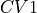 and 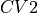.
- Parameters:
cv1s –
the bin values of the first collective variable CV1, which should be in atomic units! If you need help properly converting to atomic units, we refer to the molmod units module.
cv2s –
the bin values of the second collective variable CV2, which should be in atomic units! If you need help properly converting to atomic units, we refer to the molmod units module.
ps –
2D array corresponding to the histogram probability values at the given CV1,CV2 grid. The probabilities should be in atomic units! If you need help properly converting to atomic units, we refer to the molmod units module.
error (child of
Distribution, optional, default=None) – error distribution on the free energy profilecv1_output_unit (str, optional, default='au') –
the units for printing and plotting of CV1 values (not the unit of the input array, that is assumed to be in atomic units). Units are defined using the molmod units module.
cv2_output_unit (str, optional, default='au') –
the units for printing and plotting of CV2 values (not the unit of the input array, that is assumed to be in atomic units). Units are defined using the molmod units module.
cv1_label (str, optional, default='CV1') – label for CV1 for printing and plotting
cv2_label (str, optional, default='CV2) – label for CV2 for printing and plotting
- average_cv_constraint_other(index, target_distribution=<class 'thermolib.error.MultiGaussianDistribution'>, propagator=<thermolib.error.Propagator object>)[source]
Routine to compute a profile representing the average of one CV (denoted as y/Y below, y for integration values and Y for resulting averaged values) as function of the other CV (denoted as x below), i.e. the other CV is contraint to one of its bin values x. This is done using the following formula:
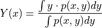
- Parameters:
index (int (1 or 2)) – the index of the CV which will be averaged (the other is then contraint). If index=1, then y=CV1 and x=CV2, while if index=2, then y=CV2 and x=CV1.
target_distribution (child instance of
Distribution, optional, default=MultiGaussianDistribution) – model for the error distribution of the resulting profile.propagator (instance of
Propagator, optional, default=Propagator()) – a Propagator used for error propagation. Can be usefull if one wants to adjust the error propagation settings (such as the number of random samples taken)
- Returns:
Profile of the average
- Return type:
- Raises:
ValueError – if index is not 1 or 2
- classmethod from_average(histograms, error_estimate=None, cv1_output_unit=None, cv2_output_unit=None, cv1_label=None, cv2_label=None)[source]
Start from a set of 2D histograms and compute and return the averaged histogram (and optionally the error bar).
- Parameters:
histograms (list of
Histogram1Dinstances) – set of histrograms to be averagederror_estimate (str, optional, default=None) – indicate how to perform error analysis. Currently, only one method is supported, ‘std’, which will compute the error bar from the standard deviation within the set of histograms.
cv1_output_unit (str, optional) – the unit in which the new CV1 will be plotted/printed. Defaults to the cv1_output_unit of the first histogram given.
cv2_output_unit (str, optional) – the unit in which the new CV2 will be plotted/printed. Defaults to the cv2_output_unit of the first histogram given.
cv1_label (str, optional) – label for the new CV1. Defaults to the cv1_label of the first given histogram.
cv2_label (str, optional) – label for the new CV2. Defaults to the cv2_label of the first given histogram.
- Raises:
AssertionError – if the histograms do not have a consistent CV1 grid
AssertionError – if the histograms do not have a consistent CV2 grid
- classmethod from_fes(fes, temp)[source]
Compute a probability histogram from the given free energy surface at the given temperature.
- Parameters:
fes (fep.FreeEnergySurface2D) – free energy surfave from which the probability histogram is computed
temp (float) – the temperature at which the histogram input data was simulated
- classmethod from_single_trajectory(data, bins, error_estimate=None, cv1_output_unit='au', cv2_output_unit='au', cv1_label='CV1', cv2_label='CV2')[source]
Routine to estimate a 2D probability histogram in terms of two collective variable from a series of samples of those two collective variables.
- Parameters:
data (np.ndarray([Nsamples,2])) – array representing series of samples of the two collective variables. The first column is assumed to correspond to the first collective variable, the second column to the second CV.
bins (np.ndarray) – array representing the edges of the bins for which a histogram will be constructed. This argument is parsed to the numpy.histogram2d routine. Hence, more information on its meaning and allowed values can be found there.
param error_estimate: indicate if and how to perform error analysis. One of following options is available:
mle_p - Estimating the error directly for the probability of each bin in the histogram. This method does not explicitly impose the positivity of the probability.
mle_f - Estimating the error for minus the logarithm of the probability, which is proportional to the free energy (hence f in mle_f). As the probability is expressed as
, its positivity is explicitly accounted for.
- Parameters:
cv1_output_unit (str, optional, default='au') –
the unit in which CV1 will be plotted/printed (not the unit of the input array, that is assumed to be atomic units). If you need help properly converting to atomic units, we refer to the molmod units module.
cv2_output_unit (str, optional, default='au') –
the unit in which CV2 will be plotted/printed (not the unit of the input array, that is assumed to be atomic units). If you need help properly converting to atomic units, we refer to the molmod units module.
cv1_label (str, optional, default='CV1') – label of CV1 that will be used for plotting and printing
cv2_label (str, optional, default='CV2') – label of CV2 that will be used for plotting and printing
- Raises:
ValueError – if no valid error_estimate value is given
- classmethod from_wham(bins, traj_input, biasses, temp, pinit=None, error_estimate=None, error_p_threshold=0.0, corrtimes=None, bias_subgrid_num=20, Nscf=1000, convergence=1e-06, bias_thress=0.001, overflow_threshold=1e-150, cv1_output_unit='au', cv2_output_unit='au', cv1_label='CV1', cv2_label='CV2', plot_biases=False, verbosity='low')[source]
Routine that implements the Weighted Histogram Analysis Method (WHAM) for reconstructing the overall 2D probability histogram in terms of two collective variables CV1 and CV2 from a series of molecular simulations that are (possibly) biased in terms of CV1 and/or CV2.
- Parameters:
bins (np.ndarray) – list of the form [bins1, bins2] where bins1 and bins2 are numpy arrays each representing the bin edges of their corresponding CV for which a histogram will be constructed. For example the following definition: [np.arange(-1,1.05,0.05), np.arange(0,5.1,0.1)] will result in a 2D histogram with bins of width 0.05 between -1 and 1 for CV1 and bins of width 0.1 between 0 and 5 for CV2.
traj_input – list of [CV1,CV2] trajectories, one for each simulation. This input can be generated using the
read_wham_inputroutine. The arguments trajectories and biasses should be of the same length.biasses (list(callable)) – list of bias potentials, one for each simulation allowing to compute the bias at given values of the collective variables CV1 and CV2 in that simulation. This input can be generated using the
read_wham_inputroutine. The arguments traj_input and biasses should be of the same length.temp (float) – the temperature at which all simulations were performed
pinit (np.ndarray, optional, default=None) – initial guess for the probability density, which is assumed to be in the ‘xy’-indexing convention (see the “indexing” argument and the corresponding “Notes” section in the numpy online documentation of the meshgrid routine). If None is given, a uniform distribution is used as initial guess.
error_estimate (str or None, optional, default=None) –
indicate if and how to perform error analysis. One of following options is available:
mle_p - Estimating the error directly for the probability of each bin in the histogram. This method does not explicitly impose the positivity of the probability.
mle_p_cov - Estimate the full covariance matrix for the probability of all bins in the histogram. In other words, appart from the error on the probability/free energy of a bin itself, we now also account for the covariance between the probabilty/free energy of the bins. This method does not explicitly impose the positivity of the probability.
mle_f - Estimating the error for minus the logarithm of the probability, which is proportional to the free energy (hence f in mle_f). As the probability is expressed as
, its positivity is explicitly accounted for.mle_f_cov - Estimate the full covariance matrix for minus the logarithm of the probability of all bins in the histogram. In other words, appart from the error on the probabilty/free energy of a bin itself (including explicit positivity constraint), we now also account for the covariance between the probability/free energy of the bins.
error_p_threshold (float, optional, default=0.0) – only relevant when error estimation is enabled (see parameter
error_estimate). Whenerror_p_thresholdis set to x, bins in the histogram for which the probability resulting from the trajectory is smaller than x will be disabled for error estimation (i.e. its error will be set to np.nan). Its use is illustrated in one of the tutorial notebooks.corrtimes (list or np.ndarray, optional, default=None) – list of (integrated) correlation times of the CVs, one for each simulation. Such correlation times will be taken into account during the error estimation and hence make it more reliable. If set to None, the CV trajectories will be assumed to contain fully uncorrelated samples (which is not true when using trajectories representing each subsequent step from a molecular dynamics simulation). More information can be found in the user guide. This input can be generated using the
decorrelateroutine. This argument needs to have the same length as thetraj_inputandbiassesarguments.bias_subgrid_num (optional, defaults to [20,20]) – see documentation for this argument in the
wham2d_biasroutineNscf (int, defaults to 1000) – the maximum number of steps in the self-consistent loop to solve the WHAM equations
convergence (float, defaults to 1e-6) – convergence criterium for the WHAM self consistent solver. The SCF loop will stop whenever the integrated absolute difference between consecutive probability densities is less then the specified value.
bias_thress (double, optional, default=1e-3) – see documentation for this argument in the
wham1d_biasroutineoverflow_threshold (double, optional, default=1e-150) – see documentation for this argument in the
wham2d_scfroutinecv1_output_unit (str, optional, default='au') –
the unit in which CV1 will be plotted/printed. If you need help properly converting to atomic units, we refer to the molmod units module.
cv2_output_unit (str, optional, default='au') –
the unit in which CV2 will be plotted/printed. If you need help properly converting to atomic units, we refer to the molmod units module.
cv1_label (str, optional, default='CV1') – label of CV1 used for plotting and printing
cv2_label (str, optional, default='CV2') – label of CV2 used for plotting and printing
plot_biases (bool, optional, default=False) – if set to True, a 2D plot of the boltzmann factor of the bias integrated over each bin will be made. This routine (mainly) exists for debugging purposes.
verbosity – controls the level of verbosity for logging during the WHAM algorithm.
- classmethod from_wham_c(bins, trajectories, biasses, temp, pinit=None, error_estimate=None, bias_subgrid_num=20, Nscf=1000, convergence=1e-06, cv1_output_unit='au', cv2_output_unit='au', cv1_label='CV1', cv2_label='CV2', plot_biases=False, verbose=None, verbosity='low')[source]
Deprecated since version v1.7: This routine sole purpose is backward compatibility and serves as an alias for from_wham. Please start using the from_wham routine as this routine will be removed in the near future.
- plot(fn=None, slicer=[slice(None, None, None), slice(None, None, None)], obss=['value'], linestyles=None, linewidths=None, colors=None, cv1_lims=None, cv2_lims=None, plims=None, ncolors=8, ref_max=False, **plot_kwargs)[source]
Make either a 2D contour plot of p(CV1,CV2) or a 1D sliced plot of the probability along a slice in the direction specified by the slicer argument. Appart from the value of the probability itself, other (statistical) related properties can be plotted as defined in the obbs argument. At the end of the argument list, you can also specify any matplotlib keyword arguments you wish to parse to the matplotlib plotter. E.g. if you want to specify the colormap, you can just add at the end of the arguments
cmap='rainbow'.- Parameters:
fn (str, optional, default=None) – name of a file to save plot to. If None, the plot will not be saved to a file.
slicer –
determines which degrees of freedom (CV1/CV2) vary/stay fixed in the plot. If slice(none) is specified, the probability will be plotted as function of the corresponding CV. If an integer i is specified, that corresponding CV will be kept fixed at its i-th value. Some examples:
[slice(None),slice(Nonne)] – a 2D contour plot will be made of the probability as function of both CVs
[slice(None),10] – a 1D plot will be made of the probability as function of CV1 with CV2 fixed at self.cv2s[10]
[23,slice(None)] – a 1D plot will be made of the probability as function of CV2 with CV1 fixed at self.cv1s[23]
obss (list, optional, default=['value']) –
Specify which statistical property/properties to plot. Multiple values are allowed, which will be plotted on the same figure. Following options are supported:
value - the values stored in self.ps
mean - the mean according to the error distribution, i.e. self.error.mean()
lower - the lower limit of the 2-sigma error bar (which corresponds to a 95% confidence interval in case of a normal distribution), i.e. self.error.nsigma_conf_int(2)[0]
upper - the upper limit of the 2-sigma error bar (which corresponds to a 95% confidence interval in case of a normal distribution), i.e. self.error.nsigma_conf_int(2)[1]
error - half the width of the 2-sigma error bar (which corresponds to a 95% confidence interval in case of a normal distribution), i.e. abs(upper-lower)/2
sample - a random sample taken from the error distribution, i.e. self.error.sample()
linestyles (list or None, optional, default=None) – Specify the line style (using matplotlib definitions) for each quantity requested in
obss. If None, matplotlib will choose.linewidths (list of strings or None, optional, default=None) – Specify the line width (using matplotlib definitions) for each quantity requested in
obss. If None, matplotlib will choose.colors (list of strings or None, optional, default=None) – Specify the color (using matplotlib definitions) for each quantity requested in
obss. If None, matplotlib will choose.cv1_lims (list of strings or None, optional, default=None) – limits to the plotting range of CV1. If None, no limits are enforced
cv2_lims (list of strings or None, optional, default=None) – limits to the plotting range of CV2. If None, no limits are enforced
plims (list of strings or None, optional, default=None) – limits to the plotting range of the probability. If None, no limits are enforced
ncolors – only relevant for 2D contour plot, represents the number of contours (and hence colors) to be used in plot.
- plower(nsigma=2)[source]
Return the lower limit of an n-sigma error bar on the histogram probability, i.e. with
the mean and the standard deviation.- Parameters:
nsigma (int, optional, default=2) – defines the n-sigma error bar
- Returns:
the lower limit of the n-sigma error bar
- Return type:
np.ndarray with dimensions determined by self.error
- Raises:
AssertionError – if self.error is not defined.
- pupper(nsigma=2)[source]
Return the upper limit of an n-sigma error bar on the histogram probability, i.e. with
the mean and the standard deviation.- Parameters:
nsigma (int, optional, default=2) – defines the n-sigma error bar
- Returns:
the upper limit of the n-sigma error bar
- Return type:
np.ndarray with dimensions determined by self.error
- Raises:
AssertionError – if self.error is not defined.
- thermolib.thermodynamics.histogram.plot_histograms(histograms, fn=None, temp=None, labels=None, flims=None, colors=None, linestyles=None, linewidths=None)[source]
Make a plot to compare multiple 1D probability histograms (and possibly teh corresponding free energy profiles)
- Parameters:
histograms (list of
Histogram1Dor child classes) – list of histrograms to plotfn (str, optional, default=None) – file name to save the figure to. If None, the plot will not be saved.
temp (float/list(float)/np.ndarray, optional, default=None) – if defined, the free energy profile corresponding to each histogram will be computed and plotted with its corresponding temperature. If a single float is given, all histograms are assumed to be at the same temperature, if a list or array of floats is given, each entry is assumed to be the temperature of the corresponding entry in the input list of histograms.
labels (list(str), optional, default=None) – list of labels for the legend, one for each histogram. Order is assumed to be consistent with profiles.
flims (float, optional, default=None) – [lower,upper] limit of the free energy axis in plots. Ignored if temp argument is not given.
colors (List(str), optional, default=None) – List of matplotlib color definitions for each entry in histograms. If an entry is None, a color will be chosen internally. If colors=None, all colors are chosen internally.
linestyles (List(str), optional, default=None) – List of matplotlib line style definitions for each entry in histograms. If an entry is None, the default line style of ‘-’ will be chosen internally. If linestyles=None, all line styles are set to ‘-‘.
linewidths (List(str), optional, default=None) – List of matplotlib line width definitions for each entry in histograms. If an entry is None, the default line width of 1 will be chosen. If linewidths=None, all line widths are set to 2.
Trajectory readers – thermolib.thermodynamics.trajectory
- class thermolib.thermodynamics.trajectory.ASEExtendedXYZReader(keys: list, units: list = [], name: str | None = None, start: int = 0, stride: int = 1, end: int = -1, reload: bool = False, verbose: bool = False)[source]
Child class of TrajectoryReader to read a series of CVs, defined in keys, from an extended XYZ file using ASE.
- Parameters:
keys (list) – list of ASE trajectory info keys to be read from the title of each frame in the XYZ file. For each key defined, the value of frame.info[key] will be extracted from the trajectory constructed with ase.io.read routine.
units (list of str, optional, default=[]) – List of units for each CV that needs to be read. If set to [], each CV will be assigned unit ‘au’ (i.e. atomic unit)
name (str, optional, default=None) – a name for printing/logging purposes
start (int, optional, default=0) – index of starting point in trajectory to extract CV values, can be used to crop out initial equilibration time.
stride (int, optional, default=1) – integer defining how to subsample the trajectory CV data. If set to a value larger than 1, only take sub samples every ‘stride’ steps. If set to 1, sample all trajectory steps. Can be used to decrease correlations between subsequent samples.
end (int, optional, default=-1) – index of last trajectory step to be sampled. Can be used to crop out the final part of a simulation trajectory. If set to -1, take all trajectory samples, i.e. no cropping.
reload (bool, optional, default=False) – If True, the first time the __call__ routine is called, the data that is read/computed from the trajectory will be written in numpy format to a file (with name equal to original trajectory file name appended with ‘.reload’ at the end). The next time the __call__ routine is called again afterwards, the trajectory data will read directly from the .reload file. This results in a considerable speedup in the case the CV is computed from a XYZ trajectory. If False, the data will be read from the trajectory file with every call to the __call__ routine.
verbose (bool, optional, default=False) – If True, switch on the routine verbosity and print more logging
- class thermolib.thermodynamics.trajectory.CVComputer(CVs: list, coords_key: str | None = None, name: str | None = None, start: int = 0, stride: int = 1, end: int = -1, reload: bool = False, verbose: bool = False)[source]
Child class of TrajectoryReader to compute the specified CVs along a given trajectory stored in XYZ or HDF5 files.
- Parameters:
CVs (list of instances from
cvmodule) – a list of collective variable defining how to compute each collective variable along the trajectorycoords_key (str, optional, default=None) – This parameter is only relevant when trajectory files require data set names to find the coordinates (i.e. in HDF5 files) and will be ignored otherwise (i.e. if trajectory files are XYZ files). This parameter then defines the location of the coordinates in the trajectory file (e.g. name of coordinates data set in HDF5 file)
name (str, optional, default=None) – a name for printing/logging purposes. If None, set to ‘/’-seperated list of the name attributes of the CVs
start (int, optional, default=0) – index of starting point in trajectory to extract CV values, can be used to crop out initial equilibration time.
stride (int, optional, default=1) – integer defining how to subsample the trajectory CV data. If set to a value larger than 1, only take sub samples every ‘stride’ steps. If set to 1, sample all trajectory steps. Can be used to decrease correlations between subsequent samples.
end (int, optional, default=-1) – index of last trajectory step to be sampled. Can be used to crop out the final part of a simulation trajectory. If set to -1, take all trajectory samples, i.e. no cropping.
reload (bool, optional, default=False) – If True, the first time the __call__ routine is called, the data that is read/computed from the trajectory will be written in numpy format to a file (with name equal to original trajectory file name appended with ‘.reload’ at the end). The next time the __call__ routine is called again afterwards, the trajectory data will read directly from the .reload file. This results in a considerable speedup in the case the CV is computed from a XYZ trajectory. If False, the data will be read from the trajectory file with every call to the __call__ routine.
verbose (bool, optional, default=False) – If True, switch on the routine verbosity and print more logging
- class thermolib.thermodynamics.trajectory.ColVarReader(indices: list, units: list = [], name: str | None = None, start: int = 0, stride: int = 1, end: int = -1, reload: bool = False, verbose: bool = False)[source]
Child class of TrajectoryReader to read the CV samples from a COLVAR file. COLVAR files (as used by e.g. Plumed) are just numpy readable text files representing arrays in which the columns represent different CVs and the rows represent the various timesteps.
- Parameters:
indices (list) – Represents the indices of the columns in COLVAR file from which to read the CV values.
units (list of str, optional, default=[]) – List of units for each CV that needs to be read. If set to [], each CV will be assigned unit ‘au’ (i.e. atomic unit)
name (str, optional, default=None) – a name for printing/logging purposes
start (int, optional, default=0) – index of starting point in trajectory to extract CV values, can be used to crop out initial equilibration time.
stride (int, optional, default=1) – integer defining how to subsample the trajectory CV data. If set to a value larger than 1, only take sub samples every ‘stride’ steps. If set to 1, sample all trajectory steps. Can be used to decrease correlations between subsequent samples.
end (int, optional, default=-1) – index of last trajectory step to be sampled. Can be used to crop out the final part of a simulation trajectory. If set to -1, take all trajectory samples, i.e. no cropping.
reload (bool, optional, default=False) – If True, the first time the __call__ routine is called, the data that is read/computed from the trajectory will be written in numpy format to a file (with name equal to original trajectory file name appended with ‘.reload’ at the end). The next time the __call__ routine is called again afterwards, the trajectory data will read directly from the .reload file. This results in a considerable speedup in the case the CV is computed from a XYZ trajectory. If False, the data will be read from the trajectory file with every call to the __call__ routine.
verbose (bool, optional, default=False) – If True, switch on the routine verbosity and print more logging
- class thermolib.thermodynamics.trajectory.HDF5Reader(keys: list, units: list = [], name: str | None = None, start: int = 0, stride: int = 1, end: int = -1, reload: bool = False, verbose: bool = False)[source]
Child class of TrajectoryReader to read the precomputed CVs from data sets stored in HDF5 file(s)
- Parameters:
keys (list) – Represent the keys of data sets in HDF5 from which to read CV values.
units (list of str, optional, default=[]) – List of units for each CV that needs to be read. If set to [], each CV will be assigned unit ‘au’ (i.e. atomic unit)
name (str, optional, default=None) – a name for printing/logging purposes
start (int, optional, default=0) – index of starting point in trajectory to extract CV values, can be used to crop out initial equilibration time.
stride (int, optional, default=1) – integer defining how to subsample the trajectory CV data. If set to a value larger than 1, only take sub samples every ‘stride’ steps. If set to 1, sample all trajectory steps. Can be used to decrease correlations between subsequent samples.
end (int, optional, default=-1) – index of last trajectory step to be sampled. Can be used to crop out the final part of a simulation trajectory. If set to -1, take all trajectory samples, i.e. no cropping.
reload (bool, optional, default=False) – If True, the first time the __call__ routine is called, the data that is read/computed from the trajectory will be written in numpy format to a file (with name equal to original trajectory file name appended with ‘.reload’ at the end). The next time the __call__ routine is called again afterwards, the trajectory data will read directly from the .reload file. This results in a considerable speedup in the case the CV is computed from a XYZ trajectory. If False, the data will be read from the trajectory file with every call to the __call__ routine.
verbose (bool, optional, default=False) – If True, switch on the routine verbosity and print more logging
Bias potentials – thermolib.thermodynamics.bias
- class thermolib.thermodynamics.bias.BiasPotential1D(name, inverse_cv=False)[source]
Abstract class for 1-dimensional bias potentials. Its inheriting child classes should implement the
__call__andprint_parsroutines.- Parameters:
name (string) – name for the bias which will also be given in the title of plots
inverse_cv (bool, optional, default=False) – If set to True, the CV axix will be inverted prior to bias potential evaluation. WARNING: possible rest value parameters of the potential (such as the rest value of the Parabola1D potential) will not be multiplied with -1!
- plot(cvs, fn=None, e_unit='kjmol', cv_unit='au', cv_label='CV1')[source]
Routine to make a plot of the bias potential as function of the CV.
- Parameters:
cvs (np.ndarray) – array representing the cv grid on which the bias is evaluated
fn (str, optional, default=None) – file name to write the plot to. If None, the plot is not written to a file.
e_unit (str, optional, default='kjmol') – energy unit in which the bias potential will be plotted
cv_unit (str, optional, default='au') – unit in which the CV will be plotted
cv_label (str, optional, default='CV1') – Label of the CV to be used in the x-label of the plot
- class thermolib.thermodynamics.bias.BiasPotential2D(name, inverse_cv1=False, inverse_cv2=False)[source]
A base class for 2-dimensional bias potentials. Its inheriting child classes should implement the
__call__andprint_parsroutines.- Parameters:
name (string) – name for the bias which will also be given in the title of plots
inverse_cv1 (bool, optional, defaults to False) – If set to True, the CV1-axis will be inverted prior to bias evaluation. WARNING: possible rest value parameters of the potential (such as the rest value q01 of the Parabola2D potential) will not be multiplied with -1!
inverse_cv2 (bool, optional, defaults to False) – If set to True, the CV2-axis will be inverted prior to bias evaluation. WARNING: possible rest value parameters of the potential (such as the rest value q02 of the Parabola2D potential) will not be multiplied with -1!
- plot(cv1s, cv2s, fn=None, temp=None, e_unit='kjmol', cv1_unit='au', cv2_unit='au', cv1_label='CV1', cv2_label='CV2', levels=array([0., 10., 20., 30., 40., 50., 60., 70., 80., 90., 100.]))[source]
Routine to make a plot of the bias potential as function of the CV.
- Parameters:
cv1s (np.ndarray) – array representing the cv1 grid on which the bias is evaluated
cv2s (np.ndarray) – array representing the cv2 grid on which the bias is evaluated
fn (str, optional, default=None) – file name to write the plot to. If None, the plot is not written to a file.
temp (float or None, optional, default=None) – If None, the bias potential itself is plotted. Else, the boltzmann factor exp(-V/kT) corresponding with the bias potential V is computed at the corresponding temperature given by temp.
e_unit (str, optional, default='kjmol') – energy unit in which the bias potential will be plotted. This parameter is ignored if temp is not None
cv1_unit (str, optional, default='au') – unit in which the CV1 will be plotted
cv2_unit (str, optional, default='au') – unit in which the CV2 will be plotted
cv1_label (str, optional, default='CV1') – Label of the CV1 to be used in the x-label of the plot
cv2_label (str, optional, default='CV2') – Label of the CV2 to be used in the x-label of the plot
- class thermolib.thermodynamics.bias.MultipleBiasses1D(biasses, coeffs=None)[source]
A class to add multiple bias potentials together, possibly weighted by given coefficients.
- Parameters:
biasses (list of instances of child classes of
BiasPotential1D) – list of bias potentialscoeffs (list/np.ndarray, optional, default=None) – array of weigth coefficients. If None, coeffs is set to an array of ones (i.e. no weighting is applied).
- Raises:
AssertionError – if biasses argument is not a list
AssertionError – if a bias in the biasses list is not an instance of
BiasPotential1DAssertionError – if coeffs is not a np.ndarray
AssertionError – if biasses and coeffs are not of equal length
- print_pars(**par_units)[source]
Routine used by the
printroutine defined in the parentBiasPotential1Dto print the parameters of the bias potential in a formatted way. The keyword arguments defined below, can be specified upon calling theprintroutine and will be parsed to the individualprintroutines of each bias. Hence, you can append the unit definitions of each bias in the list as keyword arguments of the current routine.
- class thermolib.thermodynamics.bias.Parabola1D(name, q0, kappa, inverse_cv=False)[source]
A 1-dimensional parabolic bias potential
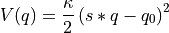
The potential can be computed for a given CV value using its
__call__routine, the bias definition can be printed in a formated way using itsprintroutine and a plot can be made using itsplotroutine.- Parameters:
name (string) – name for the bias which will also be given in the title of plots
q0 (float) – the value of the parabola equilibruim (i.e. its minimum)
kappa (float) – the force constant of the parabola
inverse_cv (bool, optional, defaults to False) – If set to True, the CV-axis will be inverted prior to bias evaluation (sets 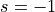 in the above formula for the bias potential). WARNING: the rest value parameter q0 of the potential will not be multiplied with -1!
- print_pars(kappa_unit='kjmol', q0_unit='au')[source]
Routine used by the
printroutine defined in the parentBiasPotential1Dto print the parameters of the bias potential in a formatted way. The keyword arguments defined below, can be specified upon calling theprintroutine.- Parameters:
kappa_unit (str, optional, default='kjmol') – Unit of the parabola force constant kappa
q0_unit (str, optional, default='au') – Unit of the parabola equilibrium CV value q0
- class thermolib.thermodynamics.bias.Parabola2D(name, q01, q02, kappa1, kappa2, inverse_cv1=False, inverse_cv2=False)[source]
A 2-dimensional parabolic bias potential.
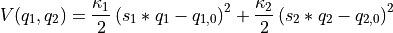
The potential can be computed for a given CV value using its
__call__routine, the bias definition can be printed in a formated way using itsprintroutine and a plot can be made using itsplotroutine.- Parameters:
name (string) – name for the bias which will also be given in the title of plots
q01 (float) – the value of the first collective variable corresponding to the parabola minimum
q02 (float) – the value of the second collective variable corresponding to the parabola minimum
kappa1 – the force constant of the parabola in the direction of the first collective variable
kappa2 – the force constant of the parabola in the direction of the second collective variable
inverse_cv1 (bool, optional, defaults to False) – If set to True, the CV1-axis will be inverted prior to bias evaluation (sets 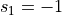 in the expression above). WARNING: the rest value parameter q01 will not be multiplied with -1!
inverse_cv2 (bool, optional, defaults to False) – If set to True, the CV2-axis will be inverted prior to bias evaluation (sets 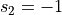 in the expression above). WARNING: the rest value parameter q02 will not be multiplied with -1!
- print_pars(kappa1_unit='kjmol', kappa2_unit='kjmol', q01_unit='au', q02_unit='au')[source]
Routine used by the
printroutine defined in the parentBiasPotential1Dto print the parameters of the bias potential in a formatted way. The keyword arguments defined below, can be specified upon calling theprintroutine.- Parameters:
kappa1_unit (str, optional, default='kjmol') – Unit of the parabola force constant kappa along the first CV
kappa2_unit (str, optional, default='kjmol') – Unit of the parabola force constant kappa along the second CV
q01_unit (str, optional, default='au') – Unit of the CV1 value corresponding to the parabola equilibrium (minimum)
q02_unit (str, optional, default='au') – Unit of the CV2 value corresponding to the parabola equilibrium (minimum)
- class thermolib.thermodynamics.bias.PlumedSplinePotential1D(name, fn, inverse_cv=False, unit='au', scale=1.0)[source]
A bias potential read from a PLUMED file, which is spline-interpolated. The potential can be computed for a given CV value using its
__call__routine, the bias definition can be printed in a formated way using itsprintroutine and a plot can be made using itsplotroutine.- Parameters:
name (string) – name for the bias which will also be given in the title of plots
fn (str) – specifies the filename of an external potential written on a grid and acting on the collective variable, as used with the EXTERNAL keyword in PLUMED.
inverse_cv (bool, optional, default=False) – If set to True, the CV-axis will be inverted prior to bias evaluation.
unit (str, optional, default='au') – unit used to express the external potential
scale (float, optional, default=1.0) – scaling factor for the bias potential (useful to invert free energy surfaces)
- class thermolib.thermodynamics.bias.Polynomial1D(name, coeffs, inverse_cv=False, unit='au')[source]
Bias potential given by general polynomial of any degree:
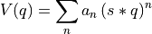
The potential can be computed for a given CV value using its
__call__routine, the bias definition can be printed in a formated way using itsprintroutine and a plot can be made using itsplotroutine.- Parameters:
name (string) – name for the bias which will also be given in the title of plots
coeffs (list/np.ndarray) – list of expansion coefficients of the polynomial in increasing order starting with the coefficient of power 0. The degree of the polynomial is given by len(coeffs)-1
inverse_cv (bool, optional, default=False) – If True, the CV-axis will be inverted prior to bias evaluation (sets in the above formula for the bias potential).
unit (str, optional, default='au') – unit in which the bias is given
- print_pars(e_unit='kjmol', q_unit='au')[source]
Routine used by the
printroutine defined in the parentBiasPotential1Dto print the parameters of the bias potential in a formatted way. The keyword arguments defined below, can be specified upon calling theprintroutine.- Parameters:
e_unit – energy unit to be used in defining the units of the coefficients
q0_unit (str, optional, default='au') – cv unit to be used in defining the units of the coefficients
Collective variables – thermolib.thermodynamics.cv
- class thermolib.thermodynamics.cv.Average(cv1, cv2, name=None, unit_cell_pars=None)[source]
Class to implement a collective variable representing the average of two other collective variables as
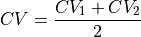
- Parameters:
cv1 (any child class of
CollectiveVariable) – first collective variable in the averagecv2 (any child class of
CollectiveVariable) – second collective variable in the averagename (str | None, optional, default=None) – Name of CV for printing/logging purposes. If None, the default implemented in the
_default_nameroutine will be used.unit_cell_pars (np.ndarray | None, optional, default=None) – Unit cell parameters that may be required to compute the CV value
- compute(coords, deriv=True)[source]
Compute the average (and optionally gradient) of the two CVs for the given atomic coordinates
- Parameters:
coords (np.ndarray([Natoms,3])) – atomic coordinates of each atom in the molecular system
deriv (bool, optional, default=True) – if True, also compute and return the gradient of the CV towards all atomic coordinates
- Returns:
CV value and potentially the gradient
- Return type:
np.ndarray(3) or float,np.ndarray([3,Natoms,3])
- class thermolib.thermodynamics.cv.CenterOfMass(indices, masses, name=None, unit_cell_pars=None)[source]
Class the implement the computation of the center of mass (COM) of a set of atoms defined by their atomic indices.
- Parameters:
indices (list of integers) – indices of the atoms of which the COM needs to be computed
masses (np.ndarray) – masses of all atoms in the molecular system. The relevant atomic masses will then be extracted using the indices parameter.
name (str | None, optional, default=None) – Name of CV for printing/logging purposes. If None, the default implemented in the
_default_nameroutine will be used.unit_cell_pars (np.ndarray | None, optional, default=None) – Unit cell parameters that may be required to compute the CV value
- compute(coords, deriv=True)[source]
Compute CV value (and optionally its gradient) for given coordinates of the molecular system.
- Parameters:
coords (np.ndarray([Natoms,3])) – atomic coordinates of each atom in the molecular system
deriv (bool, optional, default=True) – if True, also compute and return the gradient of the CV towards all atomic coordinates
- Returns:
CV value and potentially the gradient
- Return type:
np.ndarray(3) or float,np.ndarray([3,Natoms,3])
- class thermolib.thermodynamics.cv.CenterOfPosition(indices, name=None, unit_cell_pars=None)[source]
Class the implement the computation of the center of positions of a set of atoms defined by their atomic indices.
- Parameters:
indices (list of integers) – indices of the atoms of which the COP needs to be computed
name (str | None, optional, default=None) – Name of CV for printing/logging purposes. If None, the default implemented in the
_default_nameroutine will be used.unit_cell_pars (np.ndarray | None, optional, default=None) – Unit cell parameters that may be required to compute the CV value
- compute(coords, deriv=True)[source]
Compute CV value (and optionally its gradient) for given coordinates of the molecular system.
- Parameters:
coords (np.ndarray([Natoms,3])) – atomic coordinates of each atom in the molecular system
deriv (bool, optional, default=True) – if True, also compute and return the gradient of the CV towards all atomic coordinates
- Returns:
CV value and potentially the gradient
- Return type:
np.ndarray(3) or float,np.ndarray([3,Natoms,3])
- class thermolib.thermodynamics.cv.CoordinationNumber(pairs, r0=3.779452267842504, nn=6, nd=12, name=None, unit_cell_pars=None)[source]
Class to implement a collective variable representing the coordination number of a certain atom pair or a set of atom pairs. If
 atom pairs are defined, the coordination number should be a number between
atom pairs are defined, the coordination number should be a number between  and .
and .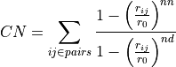
in which
 is the distance between atom i an atom j as defined in pair (i,j) present in pairs
is the distance between atom i an atom j as defined in pair (i,j) present in pairs is a reference distance for the bond between two atoms set to 2 angstrom by default but can be defined in the keyword arguments by the user
is a reference distance for the bond between two atoms set to 2 angstrom by default but can be defined in the keyword arguments by the user and
and  are integers that are set to 6 and 12 respectively by default but can also be defined in the keyword arguments by the user
are integers that are set to 6 and 12 respectively by default but can also be defined in the keyword arguments by the user
- Parameters:
pairs (list tuples) – pairs of atoms between which the coordination number needs to be computed
r0 (float, optional, default=2*angstrom) – reference index for a chemical bond used in the definition of the coordination number
nn (int, optional, default=6) – power coefficient used in the nominator in the definition of the coordination number
nd (int, optional, default=12) – power coefficient used in the denominator in the definition of the coordination number
name (str or None, optional, default=None) – Name of CV for printing/logging purposes. If None, the default implemented in the
_default_nameroutine will be used.unit_cell_pars (np.ndarray or None, optional, default=None) – Unit cell parameters that may be required to compute the CV value
- compute(coords, deriv=True)[source]
Compute the coordination number (and optionally gradient) between the atom pairs for the given atomic coordinates
- Parameters:
coords (np.ndarray([Natoms,3])) – atomic coordinates of each atom in the molecular system
deriv (bool, optional, default=True) – if True, also compute and return the gradient of the CV towards all atomic coordinates
- Returns:
CV value and potentially the gradient
- Return type:
np.ndarray(3) or float,np.ndarray([3,Natoms,3])
- class thermolib.thermodynamics.cv.Difference(cv1, cv2, name=None, unit_cell_pars=None)[source]
Class to implement a collective variable representing the difference between two other collective variables:
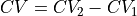
- Parameters:
cv1 (any child class of
CollectiveVariable) – first collective variable in the differencecv2 (any child class of
CollectiveVariable) – second collective variable in the differencename (str | None, optional, default=None) – Name of CV for printing/logging purposes. If None, the default implemented in the
_default_nameroutine will be used.unit_cell_pars (np.ndarray | None, optional, default=None) – Unit cell parameters that may be required to compute the CV value
- compute(coords, deriv=True)[source]
Compute the difference (and optionally gradient) between the two CVs for the given atomic coordinates
- Parameters:
coords (np.ndarray([Natoms,3])) – atomic coordinates of each atom in the molecular system
deriv (bool, optional, default=True) – if True, also compute and return the gradient of the CV towards all atomic coordinates
- Returns:
CV value and potentially the gradient
- Return type:
np.ndarray(3) or float,np.ndarray([3,Natoms,3])
- class thermolib.thermodynamics.cv.DistOrthProjOrig(pos, axis, orig, name=None)[source]
Class to implement a collective variable that represents the distance between (1) the orthogonal projection of a position (defined by a CV denoted as pos) on an axis (defined by a CV denoted as axis) through an origin (defined by a CV denoted as orig) and (2) the origin.
- Parameters:
pos (child instance of
CollectiveVariablewith type=’vector’) – the CV corresponding to the position that needs to be projected on the axisaxis (
NormalizedAxis) – the CV corresponding to the axis on which the position needs to be projectedorig (child instance of
CollectiveVariablewith type=’vector’) – the CV corresponding to the origin through which the axis needs to go and with which the difference of the projected pos will be computedname (str | None, optional, default=None) – Name of CV for printing/logging purposes. If None, the default implemented in the
_default_nameroutine will be used.
- Raises:
AssertionError – if pos is not a (child) instance of
CollectiveVariablewith pos.type=’vector’AssertionError – if axis is not an instance of
NormalizedAxisAssertionError – if orig is not a (child) instance of
CollectiveVariablewith orig.type=’vector’
- class thermolib.thermodynamics.cv.Distance(index1, index2, name=None, unit_cell_pars=None)[source]
Class to implement a collective variable representing the distance between two atoms given by index1 and index2.
- Parameters:
index1 – index of the first atom
index2 – index of the second atom
name (str or None, optional, default=None) – Name of CV for printing/logging purposes. If None, the default implemented in the
_default_nameroutine will be used.unit_cell_pars (np.ndarray or None, optional, default=None) – Unit cell parameters that may be required to compute the CV value
- compute(coords, deriv=True)[source]
Compute the distance (and optionally gradient) between the two atoms for the given atomic coordinates
- Parameters:
coords (np.ndarray([Natoms,3])) – atomic coordinates of each atom in the molecular system
deriv (bool, optional, default=True) – if True, also compute and return the gradient of the CV towards all atomic coordinates
- Returns:
CV value and potentially the gradient
- Return type:
np.ndarray(3) or float,np.ndarray([3,Natoms,3])
- class thermolib.thermodynamics.cv.DistanceCOP(index1, index2a, index2b, name=None, unit_cell_pars=None)[source]
Class to implement a collective variable representing the distance between a first atom (index1) and the center of position (i.e. the geometric center) of two other atoms (index2a and index2b).
- Parameters:
index1 – index of the first atom
index2a – index of the other atom a
index2b – index of the other atom b
name (str or None, optional, default=None) – Name of CV for printing/logging purposes. If None, the default implemented in the
_default_nameroutine will be used.unit_cell_pars (np.ndarray or None, optional, default=None) – Unit cell parameters that may be required to compute the CV value
- compute(coords, deriv=True)[source]
Compute the COP distance (and optionally gradient) between the atoms for the given atomic coordinates
- Parameters:
coords (np.ndarray([Natoms,3])) – atomic coordinates of each atom in the molecular system
deriv (bool, optional, default=True) – if True, also compute and return the gradient of the CV towards all atomic coordinates
- Returns:
CV value and potentially the gradient
- Return type:
np.ndarray(3) or float,np.ndarray([3,Natoms,3])
- class thermolib.thermodynamics.cv.DotProduct(vec1, vec2, name=None, unit_cell_pars=None)[source]
Class to implement a collective variable that is the dot product of two given vectors
- Parameters:
vec1 (instance of child class of CollectiveVariable with type='vector') – first of two vectors defining the plane for which the normal needs to be computed
vec2 (instance of child class of CollectiveVariable with type='vector') – second of two vectors defining the plane for which the normal needs to be computed
name (str or None, optional, default=None) – Name of CV for printing/logging purposes. If None, the default implemented in the
_default_nameroutine will be used.unit_cell_pars (np.ndarray or None, optional, default=None) – Unit cell parameters that may be required to compute the CV value
- Raises:
AssertionError – if vec1 is not instance of (child of) CollectiveVariable
AssertionError – if vec1.type is not ‘vector’
AssertionError – if vec2 is not instance of (child of) CollectiveVariable
AssertionError – if vec2.type is not ‘vector’
- compute(coords, deriv=True)[source]
Compute the dot product (and optionally gradient) of the two vectors for the given atomic coordinates
- Parameters:
coords (np.ndarray([Natoms,3])) – atomic coordinates of each atom in the molecular system
deriv (bool, optional, default=True) – if True, also compute and return the gradient of the CV towards all atomic coordinates
- Returns:
CV value and potentially the gradient
- Return type:
np.ndarray(3) or float,np.ndarray([3,Natoms,3])
- class thermolib.thermodynamics.cv.LinearCombination(cvs, coeffs, name=None)[source]
Class to implement a collective variable that is the linear combination of other collective variables
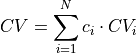
in which cvs is the list of involved collective variables and coeffs is list of equal length with the corresponing coefficients
- Parameters:
cvs (list of instances of child classes of
CollectiveVariable) – list of CVs in the linear combinationcoeffs (list or array) – coefficients corresponding to the weight of each CV in the linear combination
name (str | None, optional, default=None) – Name of CV for printing/logging purposes. If None, the default implemented in the
_default_nameroutine will be used.
- compute(coords, deriv=True)[source]
Compute the linear combination (and optionally gradient) of the CVs for the given atomic coordinates
- Parameters:
coords (np.ndarray([Natoms,3])) – atomic coordinates of each atom in the molecular system
deriv (bool, optional, default=True) – if True, also compute and return the gradient of the CV towards all atomic coordinates
- Returns:
CV value and potentially the gradient
- Return type:
np.ndarray(3) or float,np.ndarray([3,Natoms,3])
- class thermolib.thermodynamics.cv.Minimum(cv1, cv2, name=None, unit_cell_pars=None)[source]
Class to implement a collective variable representing the minimum of two other collective variables:
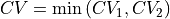
- Parameters:
cv1 (any child class of
CollectiveVariable) – first collective variable in the minimumcv2 (any child class of
CollectiveVariable) – second collective variable in the minimumname (str | None, optional, default=None) – Name of CV for printing/logging purposes. If None, the default implemented in the
_default_nameroutine will be used.unit_cell_pars (np.ndarray | None, optional, default=None) – Unit cell parameters that may be required to compute the CV value
- compute(coords, deriv=True)[source]
Compute the minimum (and optionally gradient) of the two CVs for the given atomic coordinates
- Parameters:
coords (np.ndarray([Natoms,3])) – atomic coordinates of each atom in the molecular system
deriv (bool, optional, default=True) – if True, also compute and return the gradient of the CV towards all atomic coordinates
- Returns:
CV value and potentially the gradient
- Return type:
np.ndarray(3) or float,np.ndarray([3,Natoms,3])
- class thermolib.thermodynamics.cv.NormalToPlane(indices, name=None, unit_cell_pars=None)[source]
Class the implement the computation of the normal to a plane defined by a set of atoms that are assumed to be orderd at the cornerpoints of a regular n-fold polygon
- Parameters:
indices (list of integers) – indices of the atoms in the plane for which the normal needs to be computed
name (str or None, optional, default=None) – Name of CV for printing/logging purposes. If None, the default implemented in the
_default_nameroutine will be used.unit_cell_pars (np.ndarray or None, optional, default=None) – Unit cell parameters that may be required to compute the CV value
- compute(coords, deriv=True)[source]
Compute the normal to the ring plane (and optionally the gradient) for the given atomic coordinates. Calculations assumes that the n atoms that constitute the ring are orderd at the cornerpoints of a regular n-fold polygon
- Parameters:
coords (np.ndarray([Natoms,3])) – atomic coordinates of each atom in the molecular system
deriv (bool, optional, default=True) – if True, also compute and return the gradient of the CV towards all atomic coordinates
- Returns:
CV value and potentially the gradient
- Return type:
np.ndarray(3) or float,np.ndarray([3,Natoms,3])
- class thermolib.thermodynamics.cv.NormalizedAxis(vec1, vec2, name=None, unit_cell_pars=None)[source]
Class the implement the computation of the normalized axis between two points, i.e. as the normalized difference of two input vectors.
- Parameters:
vec1 (instance of child class of CollectiveVariable with type='vector') – first of two vectors defining the plane for which the normal needs to be computed
vec2 (instance of child class of CollectiveVariable with type='vector') – second of two vectors defining the plane for which the normal needs to be computed
name (str | None, optional, default=None) – Name of CV for printing/logging purposes. If None, the default implemented in the
_default_nameroutine will be used.unit_cell_pars (np.ndarray | None, optional, default=None) – Unit cell parameters that may be required to compute the CV value
- Raises:
AssertionError – if vec1 is not instance of (child of) CollectiveVariable
AssertionError – if vec1.type is not ‘vector’
AssertionError – if vec2 is not instance of (child of) CollectiveVariable
AssertionError – if vec2.type is not ‘vector’
- compute(coords, deriv=True)[source]
Compute CV value (and optionally its gradient) for given coordinates of the molecular system.
- Parameters:
coords (np.ndarray([Natoms,3])) – atomic coordinates of each atom in the molecular system
deriv (bool, optional, default=True) – if True, also compute and return the gradient of the CV towards all atomic coordinates
- Returns:
CV value and potentially the gradient
- Return type:
np.ndarray(3) or float,np.ndarray([3,Natoms,3])
- class thermolib.thermodynamics.cv.OrthogonalDistanceToPore(ring_indices, guest_indices, masses, unit_cell_pars=None, name=None)[source]
Class to implement a collective variable that represents the orthogonal distance between the center of mass of a guest molecule defined by its atom indices (guest_indices) on the one hand, and a pore ring defined by the atom indices of its constituting atoms (ring_indices) on the other hand.
- Parameters:
ring_indices (list of integers) – atomic indices of the ring
guest_indices (list of integers) – atomic indices of the guest
masses (np.ndarray) – masses of all atoms in the molecular system. The relevant atomic masses of the guest atoms will then be extracted using the guest_indices parameter.
name (str | None, optional, default=None) – Name of CV for printing/logging purposes. If None, the default implemented in the
_default_nameroutine will be used.unit_cell_pars (np.ndarray | None, optional, default=None) – Unit cell parameters that may be required to compute the CV value
State – thermolib.thermodynamics.state
- class thermolib.thermodynamics.state.Integrate(name, cv_range, beta, cv_unit='au', f_unit='kjmol', propagator=<thermolib.error.Propagator object>)[source]
Definie macrostate as the boltzmann weighted integral over a range of microstates (i.e. range of points on the fep). The macrostate properties (mean cv, cvstd and macrostate free energy) are defined as follows
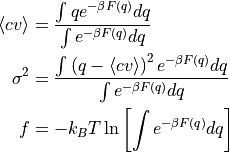
Herein, all integrals are done over a given cv range.
- Parameters:
name (str) – a name for the state to be used in printing/loging
cv_range (list of either floats or
MicroStates) – the range for the cv defining the macrostate in the integrals abovebeta (float) – the beta (i.e. 1/kT) value used in the boltzmann weighting
cv_unit (str, optional, default='au') – a unit for the cv properties in the state used in printing/loging
f_unit (str, optional, default='kjmol') – a unit for the (free) energy properties in the state used in printing/loging
propagator (instance of
Propagator, optional, default=Propagator()) – a Propagator used for error propagation. Can be usefull if one wants to adjust the error propagation settings (such as the number of random samples taken)
- class thermolib.thermodynamics.state.Maximum(name, cv_range=None, cv_unit='au', f_unit='kjmol', propagator=<thermolib.error.Propagator object>)[source]
Microstate class that identifies the maximum in a certain range defined by either cv values, indexes or other microstates.
- Parameters:
name (str) – a name for the state to be used in printing/loging
cv_range (list, optional, default=[-np.inf, np.inf]) – the microstate cv value will be looked for only in this range
cv_unit (str, optional, default='au') – a unit for the cv properties in the state used in printing/loging
f_unit (str, optional, default='kjmol') – a unit for the (free) energy properties in the state used in printing/loging
propagator (instance of
Propagator, optional, default=Propagator()) – a Propagator used for error propagation. Can be usefull if one wants to adjust the error propagation settings (such as the number of random samples taken)
- class thermolib.thermodynamics.state.Minimum(name, cv_range=[-inf, inf], cv_unit='au', f_unit='kjmol', propagator=<thermolib.error.Propagator object>)[source]
Microstate class that identifies the minimum in a certain range defined by either cv values, indexes or other microstates.
- Parameters:
name (str) – a name for the state to be used in printing/loging
cv_range (list, optional, default=[-np.inf, np.inf]) – the microstate cv value will be looked for only in this range
cv_unit (str, optional, default='au') – a unit for the cv properties in the state used in printing/loging
f_unit (str, optional, default='kjmol') – a unit for the (free) energy properties in the state used in printing/loging
propagator (instance of
Propagator, optional, default=Propagator()) – a Propagator used for error propagation. Can be usefull if one wants to adjust the error propagation settings (such as the number of random samples taken)
Conditional probability – thermolib.thermodynamics.condprob
- class thermolib.thermodynamics.condprob.ConditionalProbability1D1D(q_label='Q', cv_label='CV', q_output_unit='au', cv_output_unit='au', verbose=False)[source]
Class to compute and store conditional probabilities of the form 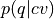 which allow to convert a free energy profile in terms of the collective variable
 to a free energy profile in terms of the collective variable
to a free energy profile in terms of the collective variable  .
.- Parameters:
q_bins (see np.histogram and np.histogram2d, optional) – np.histogram argument for defining the bins of Q samples
cv_bins (see np.histogram and np.histogram2d, optional) – np.histogram argument for defining the bins of CV samples
q_label (str, optional) – label for Q used for plotting/logging, defaults to ‘Q’
cv_label (str, optional) – label for Q used for plotting/logging, defaults to ‘CV’
verbose (bool, optional, default=False) – make all class routines more verbose in their logging
- average(propagator=<thermolib.error.Propagator object>)[source]
Compute the average of Q as function of CV
- Parameters:
propagator (instance of
Propagator, optional, default=Propagator(target_distribution=MultiGaussianDistribution)) – a Propagator used for error propagation. Can be usefull if one wants to adjust the error propagation settings (such as the number of random samples taken, or the desired distribution of the targeted error). See documentation on thePropagatorclass for more info.- Returns:
Q profile as function of CV
- Return type:
- deproject(fep, f_output_unit=None, f_label=None, f_output_class=<class 'thermolib.thermodynamics.fep.FreeEnergySurface2D'>, propagator=<thermolib.error.Propagator object>)[source]
Deproject the provided 1D FEP F(q) to a 2D FES F(q,v) using the current conditional probability according to the formula
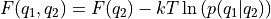
- Parameters:
fep ((child of) BaseFreeEnergyProfile) – the free energy profile F(q_2) which will be transformed
f_output_unit (str, optional, default=None) – the unit of the deprojected free energy profile to be used in plotting and printing of energies. If None, the f_output_unit of the original 1D free energy profile will be used.
f_label (str, optional, default=None) – the label of the deprojected free energy profile to be used in plotting and printing. If None, the f_label of the original 1D free energy profile will be used.
f_output_class (class, optional) – the class of the output free energy profile, defaults to FreeEnergySurface2D
propagator (instance of
Propagator, optional, default=Propagator(target_distribution=MultiGaussianDistribution)) – a Propagator used for error propagation. Can be usefull if one wants to adjust the error propagation settings (such as the number of random samples taken, or the desired distribution of the targeted error). See documentation on thePropagatorclass for more info.
- Raises:
AssertionError – if the conditional probability has not been finished yetµ
AssertionError – if the fep argument is not a
BaseFreeEnergyProfileAssertionError – if the cv grids in self.cvs[0] and fep.cvs are not consistent
- finish_error(error_estimate, error_p_threshold=0.0)[source]
Estimate error bars on the conditional probability. This routine will be called by the
finishroutine if the error_estimate keyword parsed there is not None.- Parameters:
error_estimate –
indicate if and how to perform error analysis. One of following options is available:
mle_p - Estimating the error directly for the probability of each bin in the histogram. This method does not explicitly impose the positivity of the probability.
mle_p_cov - Estimate the full covariance matrix for the probability of all bins in the histogram. In other words, appart from the error on the probability/free energy of a bin itself, we now also account for the covariance between the probabilty/free energy of the bins. This method does not explicitly impose the positivity of the probability.
mle_f - Estimating the error for minus the logarithm of the probability, which is proportional to the free energy (hence f in mle_f). As the probability is expressed as
, its positivity is explicitly accounted for.mle_f_cov - Estimate the full covariance matrix for minus the logarithm of the probability of all bins in the histogram. In other words, appart from the error on the probabilty/free energy of a bin itself (including explicit positivity constraint), we now also account for the covariance between the probability/free energy of the bins.
- type error_estimate:
str
error_p_threshold – When
error_p_thresholdis set to x, bins in the histogram for which the probability resulting from the trajectory is smaller than x will be disabled for error estimation (i.e. its error will be set to np.nan). :type error_p_threshold: float, optional, default=0.0
- Raises:
ValueError – if an invalid definition for error_estimate is provided
- process_trajectory_cvs(fns, col_q=1, col_cv=2, sub=slice(None, None, None), unit_q='au', unit_cv='au', verbose=False)[source]
Included for backwards compatibility, this routine will call the more general process_trajectory routine of the parent class.
Warning
It is no longer possible to finish automatically after processing a trajectory. Finishing must alwasy be done manually by calling the finish routine!
Extract Q and CV samples from the given COLVAR trajectories. These samples will later be utilized by the finish routine to construct the conditional probability. The trajectory files may also contain data from simulations that are biased in CV space (not Q space!!). Each CV trajectory file contains rows of the form
time q cv
If the trajectory file contains this data in a different order, it can be accounted for using the col_xx keyword arguments.
- Parameters:
fns (str or list(str)) – file name (or list of file names) of colvar files with the above formatting containing the trajectory data.
col_q (int, optional, default=1) – column index of the collective variable Q in the given input file
col_cv (int, optional, default=2) – column index of the collective variable CV in the given input file
unit_q (str, optional, default='au') – unit in which the q values are stored in the file
unit_cv (str, optional, default='au') – unit in which the cv values are stored in the file
sub (slice, optional, default=slice(None, None, None)) – python slice instance to subsample the trajectory
verbose (bool, optional, default=False) – set to True to increase verbosity of the ColVarReader when reading samples from the trajectory files.
- process_trajectory_xyz(fns, Q, CV, sub=slice(None, None, None), verbose=False)[source]
Included for backwards compatibility , this routine will call the more general process_trajectory routine of the parent class.
Warning
It is no longer possible to finish automatically after processing a trajectory. Finishing must alwasy be done manually by calling the finish routine!
Extract Q and CV samples from the given XYZ trajectories. These samples will later be utilized by the finish routine to construct the conditional probability. The trajectory files may also contain data from simulations that are biased in CV space (not Q space!!).
- Parameters:
fns (str or list(str)) – file name (or list of file names) which contain trajectories that are used to compute the conditional probability.
Q (CollectiveVariable) – collective variable used to compute the CV value from a trajectory file
CV (CollectiveVariable) – collective variable used to compute the CV value from a trajectory file
sub (slice, optional, default=slice(None, None, None)) – python slice instance to subsample the trajectory
verbose (bool, optional, default=False) – set to True to increase verbosity of the CVComputer to compute CV values from the trajectories
- transform(fep, f_output_unit=None, f_label=None, f_output_class=<class 'thermolib.thermodynamics.fep.BaseFreeEnergyProfile'>, propagator=<thermolib.error.Propagator object>)[source]
Transform the provided 1D FES to a different 1D FES using the current conditional probability according to the formula.
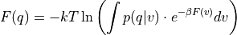
- Parameters:
fep (
BaseFreeEnergyProfile) – the input free energy profile F(cv) which will be transformed towards F(q)f_output_unit (str, optional, default=None) – the unit of the transformed free energy profile to be used in plotting and printing of energies. If None, the f_output_unit of the original free energy profile will be used.
f_label – the label of the transformed free energy profile to be used in plotting and printing. If None, the f_label of the original free energy profile will be used.
f_output_class (class, optional, default=
BaseFreeEnergyProfile) – the class of the output free energy profile. If you want to use specific features of theSimpleFreeEnergyProfileclass (such as e.g. automatic detection of reactant, transition state and product state micro/macrostates) in the transformed fep, define this argument asSimpleFreeEnergyProfile.propagator (instance of
Propagator, optional, default=Propagator(target_distribution=MultiGaussianDistribution)) – a Propagator used for error propagation. Can be usefull if one wants to adjust the error propagation settings (such as the number of random samples taken, or the desired distribution of the targeted error). See documentation on thePropagatorclass for more info.
- Raises:
AssertionError – if the conditional probability has not been finished yetµ
AssertionError – if the fep argument is not a
BaseFreeEnergyProfileAssertionError – if the cv grids in self.cvs[0] and fep.cvs are not consistent
- class thermolib.thermodynamics.condprob.ConditionalProbability1D2D(q1_label='Q1', q2_label='Q2', cv_label='CV', q1_output_unit='au', q2_output_unit='au', cv_output_unit='au', verbose=False)[source]
Class to store and compute conditional probabilities of the form
 which can be used to transform a 1D free energy profile in terms of the collective variable towards a 2D free energy surface in terms of the collective variables
which can be used to transform a 1D free energy profile in terms of the collective variable towards a 2D free energy surface in terms of the collective variables  and 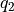.
and 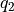.- Parameters:
q1_label (str, optional, default='Q1') – label for Q1 used for plotting/logging
q2_label (str, optional, default='Q2') – label for Q2 used for plotting/logging
cv_label (str, optional, default='CV') – label for Q used for plotting/logging
verbose (bool, optional, default=False) – set to True to increase verbosity of TrajectoryReaders used to compute the various CV samples along an XYZ trajectory
- deproject(fep, f_output_unit=None, f_label=None, f_output_class=<class 'thermolib.thermodynamics.fep.FreeEnergySurface2D'>, propagator=<thermolib.error.Propagator object>)[source]
Transform the provided 1D FEP to a 2D FES using the current conditional probability according to the formula
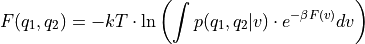
- Parameters:
fep (BaseFreeEnergyProfile or child classes) – the input free energy profile F(cv) which will be transformed towards F(q)
f_output_unit (str, optional, default=None) – the unit of the deprojected free energy profile to be used in plotting and printing of energies. If None, the f_output_unit of the original 1D free energy profile will be used.
f_label (str, optional, default=None) – the label of the deprojected free energy profile to be used in plotting and printing. If None, the f_label of the original 1D free energy profile will be used.
f_output_class (class, optional) – the class of the output free energy profile, defaults to FreeEnergySurface2D
propagator (instance of
Propagator, optional, default=Propagator(target_distribution=MultiGaussianDistribution)) – a Propagator used for error propagation. Can be usefull if one wants to adjust the error propagation settings (such as the number of random samples taken, or the desired distribution of the targeted error). See documentation on thePropagatorclass for more info.
- Raises:
AssertionError – if the conditional probability has not been finished yetµ
AssertionError – if the fep argument is not a
BaseFreeEnergyProfileAssertionError – if the cv grids in self.cvs[0] and fep.cvs are not consistent
- process_trajectory_cvs(fns, col_q1=1, col_q2=2, col_cv=3, unit_q1='au', unit_q2='au', unit_cv='au', sub=slice(None, None, None))[source]
Included for backwards compatibility, this routine will call the more general process_trajectory routine of the parent class.
Extract Q and CV samples from the given COLVAR trajectories. These samples will later be utilized by the finish routine to construct the conditional probability. The trajectory files may also contain data from simulations that are biased in CV space (not Q space!!). Each CV trajectory file contains rows of the form
time q1 q2 cv
If the trajectory file contains this data in a different order, it can be accounted for using the col_xx keyword arguments.
- Parameters:
fns (str or list(str)) – file name (or list of file names) of colvar files with the above formatting containing the trajectory data.
col_q1 (int, optional, default=1) – column index of the collective variable Q1 in the given input file
col_q2 (int, optional, defaults=2) – column index of the collective variable Q2 in the given input file
col_cv (int, optional, default=3) – column index of the collective variable CV in the given input file
unit_q1 (str, optional, default='au') – unit in which the q1 values are stored in the file
unit_q2 (str, optional, default='au') – unit in which the q2 values are stored in the file
unit_cv (str, optional, default='au') – unit in which the cv values are stored in the file
sub (slice, optional, default=slice(None, None, None)) – python slice instance to subsample the trajectory
- process_trajectory_xyz(fns, Q1, Q2, CV, sub=slice(None, None, None))[source]
Included for backwards compatibility, this routine will call the more general process_trajectory routine of the parent class.
Extract Q1, Q2 and CV samples from the given XYZ trajectories. These samples will later be utilized by the finish routine to construct the conditional probability. The trajectory files may also contain data from simulations that are biased in CV space (not Q1/Q2 space!!).
- Parameters:
fns (str or list(str)) – file name (or list of file names) which contain trajectories that are used to compute the conditional probability.
Q1 (
CollectiveVariable) – collective variable used to compute the Q1 value from a trajectory fileQ2 (
CollectiveVariable) – collective variable used to compute the Q2 value from a trajectory fileCV (
CollectiveVariable) – collective variable used to compute the CV value from a trajectory filesub (slice, optional, default=slice(None, None, None)) – python slice instance to subsample the trajectory